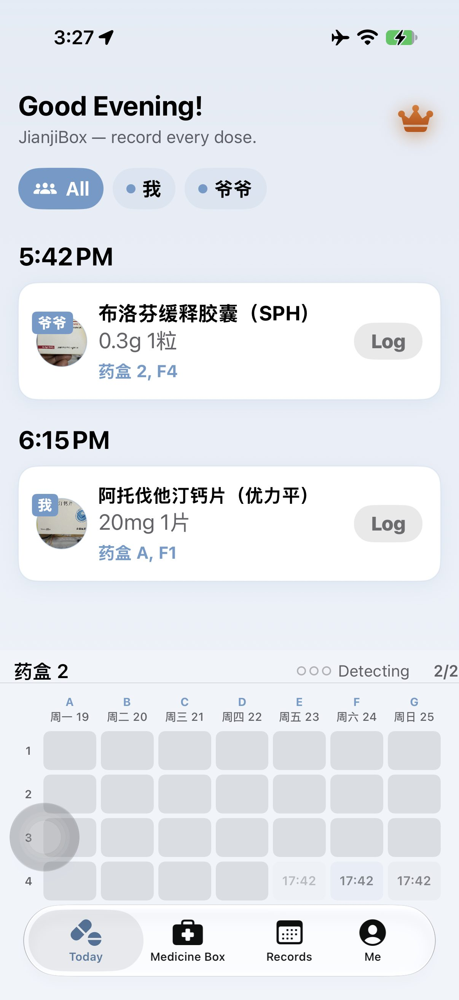
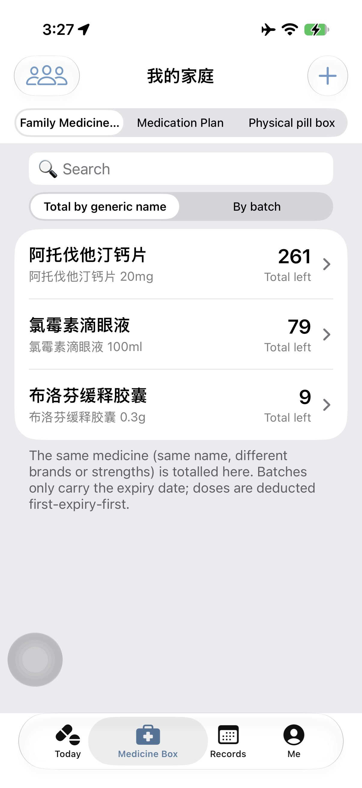
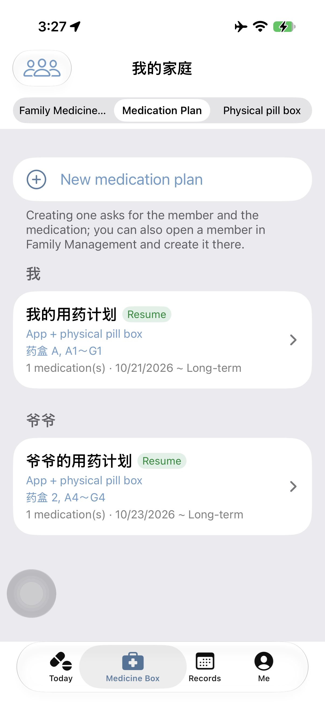
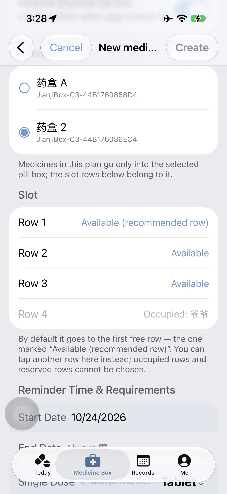
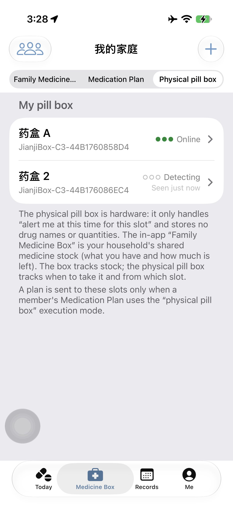
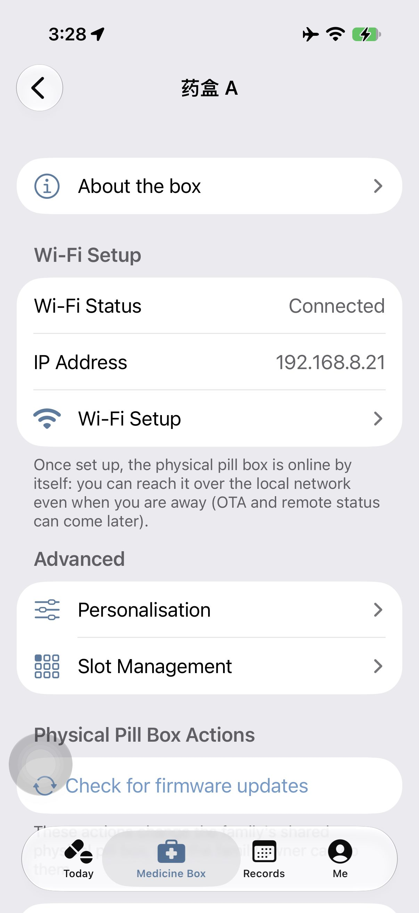
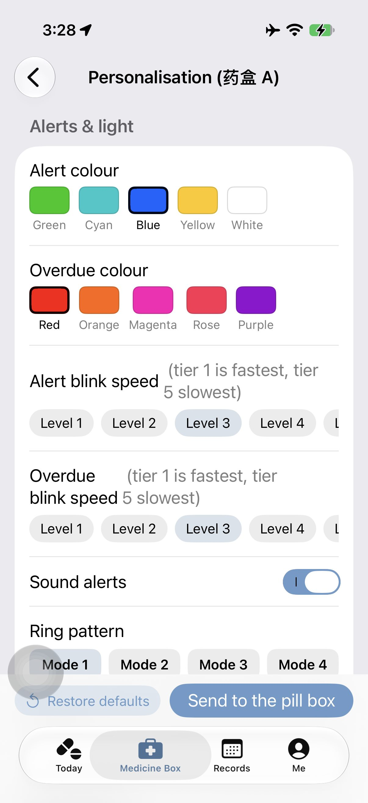
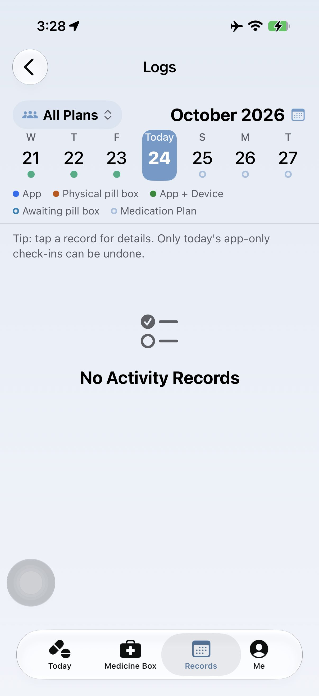
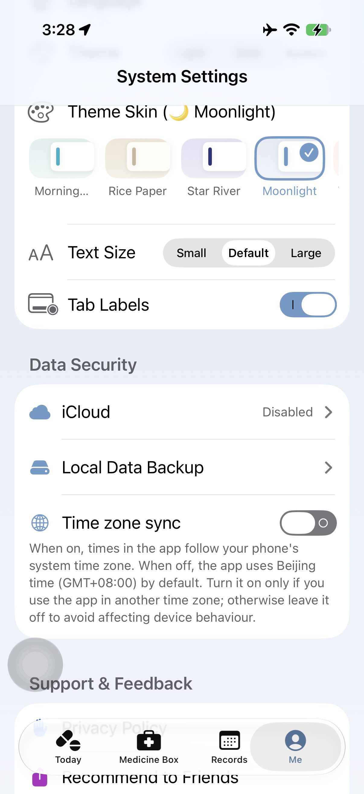

1. Getting Started: First Launch, Permissions & Five-Minute Setup

Today: today’s cards and tomorrow preview above; the slot area for box A/2 is fixed at the bottom; 2/2 means the second box.
This manual follows the real order: first launch → daily use → what to do when something goes wrong. It assumes you are the person who manages the medicines at home. Other family members do not need to install the app or sign in — they only need to look at the lights on the physical pill box.
1.1 Three things to know first
Name
What it is
What it is not
Family Medicine Box
The shared stock inside the app: which medicines you have, how many batches, each batch’s expiry, how much is left, who is using it
It is not a separate box per person; the whole family shares one stock
Medication Plan
One family member’s full schedule: what to take, how much per dose, at what times, from which day to which day
It is not stock itself; it only references medicines and batches in the Family Medicine Box
Physical Pill Box
Hardware: at the scheduled time it lights up / beeps to show “which slot is due”
It does not record medicine names or quantities, and it does not decide whether you took it
💡 One sentence: medicines live in the Family Medicine Box, the schedule lives in the Medication Plan, and the pill box only reminds you which slot is due. Loading pills into the box does not deduct stock; stock is deducted when you log that you took the dose.
1.2 What you see on first launch
A splash screen appears first (about 1.5 seconds), then 5 onboarding pages: photo capture, smart offset reminders, automatic batch ordering, clear medication records, and family members & plans. Dots at the bottom show the page; “Skip” at the top right goes straight in; the last page has “Start”.
With no medicines yet, Today shows a welcome page: the logo, “Welcome to JianjiBox”, a dashed card “Take a photo of the pill box to add the first family medicine / details filled in automatically / tap to start”, and a fixed “Important notice” at the bottom.
If you have no physical pill box bound, a “Find your pill box” card also appears below the welcome card (see §8).
The crown is always at the top right: non-members see the purchase page, members see the membership centre. It is there even with an empty library.
1.3 Permissions: when they are asked and what happens if you decline
The app does not ask for all permissions at launch. Each permission is requested only when you actually need it; declining never crashes the app, it only disables that capability. You can change any of them later in iOS Settings → Privacy & Security.
Permission
When it is asked
Why it is needed
If declined / how to restore
Notifications
When you first save or edit a medication reminder; also checked when you open Me → System Settings
Local reminders, sound and badges at the scheduled time
No sound or banner at the scheduled time; the card still appears in Today. Enable iOS Settings → Notifications → JianjiBox → Allow Notifications, or tap “Open Settings” in Me → Notifications & Badges.
Camera
When you tap “Take a photo” or “Photograph the pill box”
On-device text recognition for the medicine box or leaflet
Photo recognition is unavailable; use “Add manually”. Enable iOS Settings → JianjiBox → Camera.
Photos
When you choose an existing photo from the library
Attach an existing photo to a medicine or batch
You cannot pick from the library; take a photo or enter manually. The system photo picker usually needs no separate permission.
Bluetooth
When you tap “Scan for nearby pill boxes”, bind a box, or re-run Wi-Fi setup
First-time binding, Wi-Fi setup, and re-setup after a reset
You cannot bind a new box or re-run setup; a box that is already on Wi-Fi still works over the local network. Enable iOS Settings → JianjiBox → Bluetooth.
Local Network
The first time the app really reads/writes the box (open the device page, pull to refresh, scan for an already-configured box)
Read status, send plans, sync the clock and update firmware directly over the same Wi-Fi; no cloud, no upload
The box stays “Offline / Detecting”, plans cannot be sent, status cannot be read, firmware cannot be updated. App-only reminders, stock, records and backups are unaffected. Enable iOS Settings → Privacy & Security → Local Network → JianjiBox. If it is not listed, return to the app and trigger a read (open the device page / pull to refresh) so iOS asks again. Note: the phone and the box must be on the same Wi-Fi, not a guest/isolated network; the box supports 2.4 GHz Wi-Fi only.
Cellular Data
The first time iOS notices the app using the network (may appear on first launch)
“WLAN & Cellular” or “WLAN Only” are both fine; “Don’t Allow” only turns off cellular data, Wi-Fi still works. Change it in iOS Settings → Cellular → JianjiBox.
⚠️ The most common “the box will not connect” cause is Local Network permission denied or the phone is on a guest Wi-Fi. Check these two first, then see §8.12.
1.4 Your first reminder in five minutes
1
Add a medicine: Medicine Box → make sure “Family Medicine Box” is selected → “+” at the top right → “Take a photo” or “Add manually”. Name, quantity and expiry are required; expiry must be later than today.
2
Add a family member (optional): person icon at the top left of Medicine Box → “+”. The free tier allows 1 member (yourself); PRO allows up to 6. Add members only when different people need their own schedules.
3
Create a Medication Plan: Medicine Box → segment “Medication Plan” → “New medication plan” → choose the member, name it, choose the medicine, enter the dose and times. You may also create an empty plan and add medicines later.
4
Choose how to remind: in the medicine form, choose “App Only” or “Physical pill box”. For the pill box, also confirm “Send to” (which box) and “Slot” (one row per time point); see §4.11–4.13.
5
Save and confirm delivery: tap “New / Save”. The schedule is stored on the phone first, then sent to the box automatically: usually within seconds when online; if offline, it is queued and sent when the channel recovers. Check the top of the plan detail: “Online / Offline / Detecting” plus “Not sent to the pill box yet · Tap to send” if it differs.
6
Log when due: Today. At the scheduled time a card appears; tap the badge → “✅ Log”. Before the time the badge is grey; logging early is recorded as “Early”.
7
Check the result: the card shows “On Time / Early / Late”. If this dose requires box confirmation it shows “Stock deducted · awaiting pill box”; press the confirm key on the box to close the loop.
8
Review history: Records → “Logs”; “Medication Statistics” for the on-time rate; PRO can “Export medication records” to PDF.
1.5 The four tabs
Tab
What is inside
When to use it
Today
Today’s doses, logging, log-all, member filter, tomorrow preview, fixed slot area at the bottom
Log doses; see which slot the box is reminding
Medicine Box
Three segments: Family Medicine Box (medicines and batches), Medication Plan, Physical pill box; person icon at top left = Family
Check whether a dose was taken; show a report to a doctor
Me
System Settings: family medication reminders, notifications & badges, appearance & display, data security, support
Change notifications, theme, language, backups, open this manual
1.6 Only three status words
At the bottom of Today, in the pill box list, on the device page and in “About the box”, the same box shows only one of these three words:
Status
Meaning
What you can do
Online
The phone can reach it over the local network and it accepts this phone, so it can receive commands
Normal use; sending, clock sync and firmware update are available
Detecting
No reading yet, or reachable but this phone’s identity is not confirmed; also appears briefly while reconnecting
Wait a few seconds, pull to refresh; no settings needed. “Just seen online” under the name is the last successful time, not a fourth status
Offline
Confirmed unreachable: no power, different Wi-Fi, Local Network permission denied, or the IP changed
Check power and Wi-Fi; pull to refresh; see §8.12
⚠️ There are only three status words: Online / Offline / Detecting. “Detecting” does not mean broken — wait for a refresh.
1.7 You can use it without a pill box
Yes, with full functionality: adding medicines, plans, reminders, logging, statistics and local backup all work without a box. Set the plan’s reminder mode to “App Only” and only the phone reminds you. The physical box only adds “light up a slot at the scheduled time + beep”.
1.8 Where the data lives
By default it lives only on this phone. The developer does not receive or collect your medication data. Only when you actively export a backup does a file go to the Files app or your own iCloud Drive. Photo recognition also runs on the phone. Deleting the app deletes local data, but backups you exported to Files or iCloud Drive are not deleted automatically. The box only stores “which slot reminds on which day”; it does not store medicine names, stock or logs.
⚠️ Important: this app is only a tool for medication records, stock management and reminders. It does not provide medical diagnosis or medication advice. Always seek professional medical advice before making any medical decision.
1.9 Quick index: I want to…
I want to…
Section
Add my first medicine
§3.2
Arrange medicines for Dad / Grandma
§2.3, §4.2
Create a plan and choose the box and slots
§4, §4.11–4.13
Make the box beep / confirm delivery
§4.13, §8
See what to take today and log it
§1.4, §11
I forgot / took it late / logged by mistake
§11.4–§11.9
Running out / stock does not match
§3.8, §7.4
Box does not light / beep / connect
§8.12, §18.2
New phone / reinstall
§8.10, §15
Show medication history to a doctor
§13.3
See what needs PRO
§16.2
💡 This manual describes the interfaces that actually exist in the current version. If a button is not on your screen, it will not appear here either. If a step does not match, first check the app version (bottom of Me) against the date of this manual.
1.10 Scope of this manual
It does not describe removed interfaces or internal technical details. Status words, button names and messages are written exactly as they appear in the Simplified Chinese interface; after switching languages the words change but the position and behaviour do not. This manual matches 1.6.10 (2026-10-23) and pill box firmware 0.1.80.
2. Family & Members
“Members” here are only owners of a medication schedule, not accounts. They do not install the app, sign in, or accept invitations. The app is a tool for the Owner.
2.1 Where to find it
Medicine Box → person icon at the top left (VoiceOver reads “Family & Plans”) → Family & Plans page. The page title is “Family & Plans”.
2.2 Rename the family
1
On the Family & Plans page, tap the first row “Family name”.
2
Enter a new name → “Save”. Up to 12 characters; it cannot be empty.
3
The title at the top of Medicine Box and the widget update immediately. Members, stock, plans and box ownership do not change.
Non-owners see this row greyed out with the footer “Only the Owner can rename the family.”
2.3 Add a family member
1
Family & Plans → “+” at the top right → “Add Member”.
2
Enter a name (e.g. “Dad”, “Grandma”). It cannot be empty and must be unique within the family.
3
Tap “Add”. You can add several in a row: added ones show “Added”; tap “Done” when finished.
4
Go back to Medicine Box → Medication Plan → “New medication plan” → choose the new member under “Select member”.
2.4 Limits
Free: 1 member (yourself). Tapping “+” again opens the paywall: “The free version supports 1 family member. Upgrade to PRO to manage up to 6.”
PRO: up to 6 members including yourself. Beyond 6: “A family can have at most 6 members.”
Members are counted as “added and not deleted”; deleting one frees the slot immediately.
2.5 Rename a member
Swipe left on a member → “Rename” → enter the new name → “Save”.
The Owner can rename anyone; a regular member can rename only themselves.
Names must be unique in the family: “Someone in this family is already called ‘X’. Choose another name.”
Renaming only changes the display: plans, logs and box ownership stay the same.
The “Owner” badge does not move when you rename; it follows who bound the pill box.
2.6 Delete a member
Swipe left on a member → “Delete”. There are two cases:
No plans and no logs: deleted immediately, without the two-option dialog. This avoids confusing someone who has no history to keep.
Has history or plans: “Delete member?” with three buttons:
Button
What happens
When to use
Delete plans only
All of their medication plans are deleted; logs are kept
You still want to look up their past doses in Records
Delete plans and history
Plans and all logs are permanently deleted; cannot be undone
You are sure you no longer need any record
Cancel
Nothing happens
—
⚠️ Before deleting, handle any slots this member occupies in the physical box. The app deletes the plan and ownership but does not empty the physical slots. If pills are still inside, process them first in Physical Pill Box → Slot Management (take out or discard).
2.7 Who is the Owner
Whoever binds the physical pill box is the Owner. There is no “transfer ownership”; the interface has no such entry.
The only way to change the Owner is to reset this physical pill box first (device page → “Reset this pill box”), then have the new member bind it again.
Resetting only affects the box and who is bound to it. Medicines, plans, stock and logs in the app are not deleted, but the reminder mode changes from “physical pill box” to “App Only”.
The Owner can rename the family, add/remove members, change stock, load the box, change box settings and check firmware. Regular members can only view/manage their own plans and logs.
2.8 Do family members need the app?
No. They do not install it, sign in, or accept invitations. The household shares one physical pill box: which slot is due is shown by the lights. The app is only for registering medicines and stock, scheduling each member’s doses, loading/emptying the box, and recording a dose that could not be handled on the box.
2.9 Common questions
Can I add a 7th member? No, the limit is 6 including the Owner.
Can I restore a deleted member? No. With “Delete plans only” the logs remain, but the person is gone from the roster; re-adding someone with the same name will not reattach the history.
Can a family member use the app themselves? There is only one operator on this phone. You may hand the phone over to show Today, but do not let them change stock or plans.
Why can’t I see someone else’s plan? Regular members see only their own; use the Owner account to see the whole family.
2.10 How to arrange a multi-member family
Group plans by who takes them, not by medicine:
Scenario
How to set up
Why
Dad takes two long-term medicines at the same time
One plan, two medicines, one 08:00 time
One card lists both; one log deducts both
Dad takes one in the morning, another at night
One plan, two medicines, separate times
Cards are grouped by time; log morning and night separately
Dad and Grandma both take medicines
Two members, two plans
Logs, Today cards and rows used stay clear
The same medicine is taken by the whole family
One shared stock; each plan references it
The same stock is deducted; each person logs their own dose
Dad has a 5-day antibiotic plus a long-term blood-pressure medicine
Prefer two plans
The short course ending does not affect the long-term one; the app also warns about mixing
2.11 What a regular member can and cannot do
Action
Owner
Regular member
See own Today / Records
Yes
Yes
See the whole family’s Today / Records
Yes
No
Create/edit own plans; log own doses
Yes
Yes
Add/remove members; rename family
Yes
No
Add stock, adjust stock, delete medicines
Yes
No
Pair/set up the box, change box settings, load/empty the box
Yes
No
Handle pills they loaded into the box themselves
Yes
Yes (own pills only)
💡 A regular member is not a “second-class account”. The app is simply designed for one person to manage the household; family members only need the box lights.
2.12 Common questions about family management
Do plans break if a member is renamed? No. Plans, logs and box ownership are bound to an internal identity; the name is only for display.
After deleting a member, is their medicine still in stock? Yes. Stock is shared by the family and does not shrink when a person is removed. Whether the medicine is still used depends on whether any plan references it.
Can there be two Owners? No. Whoever binds the box is the Owner; there is no transfer.
Does the widget update when the family name changes? Yes, it reads the same family name.
Can I move a member to another family? The current version has only one family; there is no cross-family move.
3. Family Medicine Box: Medicines, Batches & Expiry

Family Medicine Box list grouped by generic name, with total remaining on the right.
The Family Medicine Box is one shared stock for the household. It is not split per person; each member’s plan only references medicines here. Only the Owner can add medicines, adjust quantities or delete them.
3.1 Where to find it and the two views
Medicine Box → segment “Family Medicine Box”. Above the list there are two modes: “By generic name” (default) and “By batch”.
View
One row is…
Best for
By generic name
One medicine; on the right “Total left N units”; below “N batches · Available N units · N people using it”
Daily “how much is left of this medicine”
By batch
One medicine; tap in to see each batch (different expiry / manufacturer)
Checking which batch expires when, or deleting a batch
The search box matches medicine name or custom name, case-insensitive; clearing it shows everything.
A medicine with no quantity shows “No quantity”; it has no stock display and does not trigger low-stock alerts.
When available ≤ 0, the batch view shows a red “Out of stock”; the total in the generic view turns red.
If the earliest batch expires within 30 days, the generic view shows an orange line “Expiring soon: medicine date (check both the box and the bottle)”.
3.2 Add your first medicine (photo or manual)
1
“+” at the top right → two entries: “Take a photo” and “Add manually”. Both are also on the empty state.
2
Take a photo: photograph the front of the box; the app recognises name, specification, manufacturer, expiry and more locally on the phone and fills only the fields that are still empty. A “Extracted successfully” alert appears; correct anything that is wrong. You may take more photos of the dosage, specification or expiry; the app fills the matching fields.
3
Check the required fields:
Name: required.
Quantity: required, greater than 0, range 0–9999. The hint is “Required: e.g. 1 box of 24 tablets → enter 24” — enter the smallest unit (tablets/capsules/sachets), not the number of boxes.
Expiry: required and must be later than today. Today or a past date shows “The expiry date has passed (date); it cannot be added. Check the date on the box.”
4
Optional: custom name (brand name), specification (e.g. 25 mg), manufacturer, notes, photos. Photos: free 1 per batch, PRO 5; the first is the cover.
5
Tap “Save” at the top right. The medicine appears in the list. The first “quantity + expiry” becomes batch 1.
3.3 Buying the same medicine again = a new batch
If you add the same name again, the app groups it under the same medicine and creates a new batch (this does not use another “medicine” quota). The two batches can have different expiry, manufacturer, specification, custom name and photos.
Batch titles look like “Batch 1, Lipitor”, “Batch 2, Generic”. A custom name belongs to that batch only; leave it empty to show “Batch N”.
Deduction is first expiry first: it automatically takes from the earliest batch that is not discarded, still has stock and has not expired.
The medicine keeps one master record; a new batch’s custom name does not rename the old batch.
3.4 Medicine details
Tap any row in the Medicine Box → medicine details. The navigation title is only the medicine name (no custom name appended).
Each batch is a card; outside the card: “Batch N, custom name”.
Inside: photos (swipe horizontally; “No photo” if none), added date, expiry (red when ≤30 days or expired), manufacturer, specification, remaining in this batch: N units (red when ≤0), “In use:” with one line per user “member · frequency time · dose”.
Medication that is not yours is shown only as a neutral “Other medication”, without names or dosage.
“Add batch” at the bottom.
3.5 Edit a batch and its remaining quantity
In medicine details, swipe left on a batch → “Edit”: custom name, expiry, manufacturer, specification, remaining in this batch, photos. Editing the remaining quantity is a manual stock calibration.
The calibrated number immediately affects “Available” and low-stock decisions.
It cannot be negative; values above 9999 are clamped to 9999.
If you are restocking, prefer “Add batch” over editing an old batch: a new batch has its own expiry and a clearer ledger.
3.6 Delete a medicine or a batch
Swipe left on a medicine → “Delete”; in medicine details, swipe left on a batch → “Delete”.
Batch deletion is blocked in this order:
Blocked when
Message
Way out
Remaining in this batch > 0
“This batch still has X. Set ‘Remaining in this batch’ to 0 first (swipe → Edit), then delete.”
Set it to 0, then delete
The only batch and still in use
“It is still in use and cannot be deleted.”
Pause/delete the plans that reference it
The only batch and not in use
“Delete the whole medicine?” explains that the whole medicine goes
Confirm to delete the medicine
Multiple batches, not all expired and still in use
“This batch is still in use and cannot be deleted.”
Wait until expiry or stop the plan
This batch was consumed/discarded today
“This batch has already been used today. To avoid stock errors after resetting a log, delete it tomorrow.”
Delete tomorrow
Deleting a whole medicine is also blocked when:
You are not the Owner → “Only the Owner can delete medicines from the Family Medicine Box.”
Total available > 0 → “There is still X in stock, so it cannot be deleted. Set each batch’s ‘Remaining in this batch’ to 0 in the medicine details first.”
Pills are still in the pill box (loaded/reserved/pending clear) → “N doses are still in the physical pill box (or reserved). Take them out and process them first.”
Another member added a batch → the whole medicine cannot be deleted.
⚠️ Deleted medicines and batches cannot be restored. If you want a safety copy, export a local backup first (Me → System Settings → Data Security → Local Data Backup).
3.7 Rename a medicine
Swipe left → “Rename”. Only this medicine’s display name changes; same-named medicines are not merged automatically.
If a medicine with that name already exists, “A medicine with this name already exists” appears; choose “Choose another name” or “Cancel”.
All family plans show the new name; existing logs keep the old name snapshot.
To add a brand/alias, use “Custom name” in Edit instead of Rename.
3.8 How stock is counted (important)
Number
How it is calculated
Where it appears
Remaining in this batch
Batch total − loaded/reserved/pending-clear portions
Batch card in medicine details
Available
Sum of remaining in batches that are not discarded and not expired
“Total left / Available” in the list, low-stock decisions, deduction
No quantity
Added with quantity empty/0
No stock display, no alerts, no low-stock
Expired batches no longer participate in deduction and are not counted in “Available”; their date turns red but the quantity is still visible.
If every batch is expired, logging still succeeds but no stock is deducted (see §7).
“Available” is not “what is left in the bottle”: pills loaded into the box still belong to this medicine, just reserved.
“Discard” deducts by the number discarded; “Empty the pill box (pills taken out)” returns pills to the warehouse without changing the total (nothing was deducted when loading).
3.9 Low-stock alert
Switch: Me → System Settings → Notifications & Badges → “Low Stock Alert” (default off).
When on: if “available ÷ daily total ≤ 3 days”, the Medicine Box tab shows a red badge and the medicine details show “Ignore low-stock alert”.
“Ignore” only ignores the current quantity: restocking or consuming changes the number and the alert returns.
Zero stock is not “low stock”; it shows “Out of stock” and does not create a red badge.
3.10 Common questions
Why is Save greyed out? Name, quantity or expiry is missing, quantity is 0, or no expiry is selected.
Why does it say the expiry has passed? The expiry must be later than today. OCR may misread the year; check it against the box.
Why can’t I delete? See §3.6: stock not zero, still in use, still in the box, or another member added a batch.
Why does the number not match the bottle? Pills are in the box slots, or the remaining quantity was edited before. Check each batch and calibrate with “Edit → Remaining in this batch”.
The name is wrong. Swipe → “Rename”; history and plans are unaffected.
3.11 Two complete examples
Example A: buying one box of ibuprofen for the first time
1
Medicine Box → Family Medicine Box → “+” → “Take a photo”, shoot the front of the box.
2
It recognises “Ibuprofen sustained-release capsules”, “0.3 g”, expiry “2028-05”. Check the name and expiry; enter quantity “24” (24 capsules in the box → 24, not 1).
3
Tap “Save” → the row appears: “1 batch · Available 24 capsules · 0 people using it”.
4
Tap in: “Batch 1”, remaining 24, expiry 2028-05.
Example B: buying the same medicine three months later
1
Again “+” → “Add manually”, same name, quantity 24, expiry from the new box.
2
It does not create a second medicine; the same medicine gets “Batch 2”. The list still has one row, now “2 batches · Available 48”.
3
Tap in: each batch has its own expiry; deduction takes the earliest-expiring one first.
3.12 What photo recognition can and cannot do
Can: recognise name, brand, specification, quantity, unit, manufacturer, expiry and production date, and fill only fields that are still empty (it never overwrites what you typed).
Can: take several photos (front, dosage, specification, expiry) and merge the results.
Cannot: guarantee 100% accuracy. Glare, angles, stylised fonts or foreign boxes may be misread; always check the name and expiry yourself.
Cannot: recognise “how to take it”. Dosage must come from the leaflet or prescription.
If nothing is recognised, “Could not recognise” appears; choose “Enter manually”. This is not a failure — manual entry works the same.
3.13 Photos and privacy
Photos are stored on the phone and travel with backups; they are not uploaded to the developer’s server.
Free: 1 photo per batch; PRO: up to 5. Going over prompts an upgrade.
Box photos may contain medicine names, personal names or hospital details; think before sharing a backup.
The list avatar prefers the first photo of the batch; without a photo it uses a dosage-form icon or the first two characters of the name.
3.14 Five misconceptions about stock
Misconception
Fact
“Loading the box means it is used up.”
No. Loading only reserves; logging deducts. Emptying with “pills taken out” does not change the total.
“Deleting a plan adds stock back.”
No. Stock changes only on logging, discarding, manual calibration or restocking.
“Expired batches disappear automatically.”
No. They stop counting toward available/deduction; set the remaining quantity to 0 before deleting.
“Available = what is in the bottle.”
Not equal. Pills in box slots still count (reserved) but cannot be assigned twice.
“Low stock blocks logging.”
No. 1.6 still records the log, deducts down to 0 and never goes negative; calibrate afterwards.
4. Creating a Medication Plan: Times, Doses, Frequency & Dates

Medication Plan list grouped by family member; each card shows status, channel, occupied rows and period.

New plan: choose the box under “Send to”; choose one row per time point under “Slot”; occupied rows (e.g. row 4, Grandpa) cannot be selected.
A Medication Plan is one family member’s full medication schedule. It can contain one medicine or several; each medicine can have its own times, dose and reminder mode. The plan does not hold stock; it only references medicines and batches in the Family Medicine Box.
4.1 Two entry points
Create from scratch: Medicine Box → “Medication Plan” → “New medication plan”. You may create an empty plan with only a member and a name, and add medicines later.
Create under a member: person icon at the top left of Medicine Box → tap a member → their plan page → “+” at the top right.
4.2 Creating a plan, step by step
1
Select member: tap “Select member” and choose who this plan belongs to. “Create” stays grey until you do.
2
Plan name: the grey text is the default (e.g. “Dad’s medication plan”). Leave it empty to use the default; type your own to override. Up to 24 characters.
3
Select medicine: “Select from Family Medicine Box” → pick one. You may specify a batch or choose “No batch specified (first expiry first)”. A specified batch is the only source; otherwise the earliest-expiring batch is used.
4
Reminder mode (per medicine): “App Only” uses phone notifications; “Physical pill box” sends it to box slots. Only the latter enables “Require pill box confirmation after logging” (default on).
5
Send to (physical box, not monthly): with one box it shows “Will send to: X”; with two or more you choose one. An offline box can be selected; it will receive the schedule when it comes online.
6
Slot (physical box): choose a row for each medication time (row 1, 2…). Rows already occupied by someone/something else cannot be chosen. On the first load you also choose “Which weekday goes in column A?” (default Monday).
7
Start date: today by default; cannot be earlier than today; may be set in the future.
8
End date: “Always” by default. Tap it to set an end date (prefilled with “one round = one week”, including the first day); tap × to return to “Always”. The end date includes that day.
9
Single dose: amount per dose, greater than 0, range 0–9999. Tap the unit button on the right (four groups: oral solid / liquid / topical·inhaled·injection / measurement units).
10
Reminder frequency: daily / weekly / monthly (see §5).
11
Personal note: optional, only for you.
12
Add medication time: each added time is another reminder. Each time can have its own “dose per time” and “medication requirement”; leave the dose empty to use the single dose above.
13
Tap “Create” at the top right (“Save” when adding to an existing plan). On success it returns to the plan page; on failure it shows the reason instead of closing silently.
💡 Only want an empty plan? Skip the medicine in step 3 and tap “Create”. Then open the plan and tap “+” to add medicines.
4.3 Reading a plan card
Plans are grouped by member. Each plan row usually has four lines:
Line
Example
Meaning
Name + status
“Dad’s medication plan Active”
Status is Active / Paused / Ended / Trash; an extra blue badge appears if “Long-term reminder” is on
App Only never shows “physical pill box”; this line is hidden when there are no reminders
Rows used
“Slots A3–G3, A4–G4” or “Slots not assigned”
Which rows this plan occupies in the box
Count + period
“2 medicines · 2026/10/01 – Always”
Excludes trashed items; period is earliest start to latest end
“Plans that won’t ring on the box” may appear at the top: a plan has box reminders but no box selected or no slot. Tap in and follow the prompt.
If the app repaired a plan association at launch, “Automatically linked the plan to ‘X’, please confirm” appears; tap “Got it” to dismiss.
If the same member has the same medicine at the same time in two plans, “Duplicate medication to resolve” appears at the bottom; it only informs and never edits data automatically.
4.4 What the plan details page contains
Box table: only when the plan contains “Physical pill box” medicines. Columns = the seven days (A = your chosen week start), rows = daily slot numbers; loaded cells show medicine/dose; paused-but-occupied rows show a dash.
Sync status: the status word (Online/Offline/Detecting) plus, when inconsistent, “Plan not sent to the box · tap to send”. Online means synced; there is no second “synced/unsynced” vocabulary.
Unplaced reminders: an orange line saying these reminders will not be sent, and how to assign a row or switch to App Only.
Empty the pill box (pills taken out): below the table. Choose “taken out, return to warehouse” or “discard” → release slots and pause the box reminders of this plan.
Reminder list: one row per medicine; swipe left for “Delete”, “Edit”, “Resume/Enable”.
4.5 Pause, resume, delete, trash
Pause: swipe left → “Pause”. It takes effect immediately and stops new reminders; pills stay in their slots and stock does not change. If pills are in the box, an explanation appears: “Pills stay in the current slots; you can resume or delete this plan later.”
Resume: swipe left on a paused plan → “Resume”. Reminders return; if pills are still in the box, the slots remain its own.
Delete: only paused plans (or empty plans) can be deleted. “Delete this medication plan?”: no pills in the box → “Delete”; pills in the box → “Taken out, return to warehouse and delete” / “Discard and delete”. Both release all slots.
Trash: deleted plans go to “Trash” at the bottom (only shown when something is there). “Restore” returns it as Paused; tap Resume yourself. “Delete permanently” keeps existing logs.
Empty plan: a plan with no reminders has only “Rename” and “Delete” when swiped, in any status.
4.6 Limits
Free: only 1 Active plan at a time. Creating another opens the paywall.
Ended, paused and trashed plans do not count toward the Active limit.
PRO: multiple plans; unlimited medicine types within a plan.
Free: at most 3 medicine master records; adding a batch to the same medicine does not use a quota slot.
4.7 Common questions
Why is “Create” grey? No member selected.
Why does it suggest a separate plan? You mixed long-term and short-term medicines in one plan. You may still add, but long and short end dates affect each other; separate plans are clearer.
Why the same-medicine-same-time warning? Within one plan, the same medicine and batch cannot repeat at the same time; different batches at the same time are allowed after you confirm (e.g. one tablet from each batch).
The plan is created but the box does not ring. Check the top of the plan details: App Only? box selected? slot assigned? sent? Fix each item.
Can I change who a plan belongs to? Not directly. Create a plan for the right person and use “Move to another plan” in the edit page.
4.8 A complete example from creation to ringing
Goal: Dad takes 1 tablet of metformin at 08:00 and 2 tablets at 20:00 for 7 days, using the physical pill box.
1
Medicine Box → “Medication Plan” → “New medication plan” → select “Dad” → leave the name empty (default “Dad’s medication plan”).
2
Select “Metformin” → specify a batch or leave it unspecified (first expiry first).
3
Reminder mode “Physical pill box”; keep “Require pill box confirmation after logging” on (default).
4
Send to: only one box at home → “Will send to: Living room box”.
5
Slot: first time (08:00) row 1; second time (20:00) row 2.
6
Start today; tap “Always” and set the end date to today + 6 days (7 days including the first).
7
Single dose 1, unit tablet; frequency Daily; add 08:00 and 20:00; set the evening time’s “dose per time” to 2.
8
Tap “Create”. The plan shows Active, App + Physical pill box, slots A1–G1, A2–G2.
9
Open the plan and confirm the sync status is Online; put the morning pills in row 1 and the evening pills in row 2 following the table.
10
At 08:00 the box lights/beeps row 1; after Dad takes it and presses the confirm key, the Today card becomes “On Time”. Same at night.
⚠️ “Twice a day with different doses” is done by two times with their own dose, not by two medicines. Do not create two reminders for the same batch (the same plan cannot repeat the same batch).
4.9 Field reference
Field
Required
Default
Notes
Select member
Yes
None
Decides ownership, notifications and records
Plan name
No
“X’s medication plan”
Empty uses the default; up to 24 characters
Select medicine
No when creating a plan
None
An empty plan can be filled later
Batch
No
Unspecified (first expiry first)
Specified means only that batch is deducted
Reminder mode
Yes
Physical pill box
Can differ per medicine
Send to
For physical box
Last choice / the only box
Offline boxes can be chosen
Slot
For physical box
Automatically suggested free row
Occupied rows cannot be chosen
Start date
Yes
Today
Cannot be earlier than today
End date
No
Always
Includes that day
Single dose
Yes
Empty
>0, ≤9999
Frequency
Yes
Daily
Weekly/monthly keep one time
Medication time
Yes
08:00
Adjacent times ≥60 minutes apart
Medication requirement
No
None
Only affects the card hint
Personal note
No
Empty
Only for you
4.10 How plans, stock and the box relate
Question
Answer
Does a plan lock stock?
No. Only portions loaded into the box are “reserved”, and they still count as stock.
How many rows can one plan use?
Several times can use several rows; one row can serve several medicines at different times.
Can two plans share a row?
The same dose time may share a row; different dose times do not share by default (one row = one dose time).
Does pausing release slots?
No. Pausing stops reminders only; pills stay. Empty the box or process cells to release.
Does deleting a plan delete stock?
No. It deletes the plan and its schedule; stock, medicines and logs remain.
4.11 Choosing the pill box: “Send to”
This section appears only when the reminder mode is “Physical pill box” and the frequency is not “Monthly”. Monthly schedules are calendar-based, while the box is weekday-based, so the app switches monthly plans to App Only automatically.
Only one box at home: a read-only row “Send to: X”; nothing to choose.
Two or more boxes: one row per box; tap to select. The selected box runs a whole-box light test row by row (row 1 → row 2 → …) so you can confirm which box you picked. It is only a light test; it does not load pills or change stock.
An offline box can still be selected: the plan is queued and sent automatically when it comes back online.
Switching boxes clears the row choices you just made, because row numbers belong to a specific box; choose the rows again.
If the light test fails, an orange notice appears below (box offline / no acknowledgement). A failed light test does not block saving; save first, bring the box online per §8.12, and the app will resend automatically.
4.12 Choosing slots: one row = one time point
In “Slot”, choose one row for each medication time. A row is the same physical slot across the seven weekdays (columns A–G) and also one time point for that member. A row is not permanently assigned to a person: any family member can use any empty row on any box. But one row cannot serve two different times or two different members at once.
Row state
Meaning
Selectable?
Empty
No plan occupies this row
Yes
Empty (suggested)
The app’s recommended row (usually the first empty row; if the same member already has a row at this time, sharing it is preferred)
Yes; if you do not choose, this row is used
Current choice
The row you tapped, or the row already saved for this reminder
Already selected
Occupied: name
Another member’s time point owns this row; pills may still be inside
No
Reserved by admin
An empty row kept out of automatic allocation
No (not needed for normal use)
Why a row is disabled: it is occupied by another member/time, may still contain leftover pills, or is reserved. The app will not push someone else’s pills out just to let you choose.
Light test: tap a row and the 7 cells of that row on that box flash green once; tap a box under “Send to” and the whole box runs row by row. A failed light test only shows an orange notice and does not block saving.
Which weekday is column A: chosen the first time you load this box (default Monday). A–G are only position labels; the hardware does not know the weekday. The week start is used only for scheduling in the app. To change it later, go to Physical pill box → Slot status; it applies from the next round.
Several medicines at the same time: the same member at the same time can share one slot (recommended). If you insist on a separate row for one of them, the app asks “The same person at the same time can share one slot… are you sure you want a separate row?”.
Different times cannot share a row: the box would not know which cell to light. The app rejects it and moves the reminder to another empty row.
Changing rows: when editing a saved reminder and choosing another row, the app first asks to clear the old cell — this prevents leftover pills in the old row while the new row is also occupied.
No row available: the app shows “The box is full” or “These reminders have no slot yet”. Clear a row, reduce time points, use another box, or switch the reminder to App Only.
4.13 After saving: when it takes effect and how to confirm delivery
1
Tap “New / Save”. A grey Save button usually means: no member selected, a medicine is selected but the dose is empty, a time point is empty, no weekday selected for Weekly, or no date selected for Monthly.
2
Saving succeeds when the schedule is stored on the phone. The app then automatically sends the latest schedule to the box (no manual sync needed): usually within seconds when online; when offline it is queued.
3
To confirm delivery, open the plan detail and look at the top row. The status is only Online / Offline / Detecting. If the app thinks the box’s table differs from the phone’s, it shows “Not sent to the pill box yet · Tap to send”.
4
“Online” with no such button means it has been delivered. There is no second status word; online means delivered.
5
If it never goes out: make sure the phone and box are on the same Wi-Fi and Local Network permission is on; pull to refresh; open the device page and check status/IP; if it still fails, see §8.12. If firmware 0.1.80 has a stuck HTTP stack, it self-restarts in about 3 minutes; the app resends after reconnecting.
Manual fallback: only tap “Not sent to the pill box yet · Tap to send” when that line appears; a normal save needs no manual sync.
How long it takes: seconds when online; when offline, as soon as the box is back. The app retries within the next poll (5 s on Today/device page, 30 s elsewhere, 3 s when offline backing off to 60 s) and resends. IP changes are migrated automatically (3 consecutive failures + identity check); you never edit the address by hand.
Did it really reach the box? At the scheduled time, watch the box light/beep and the slot state in Today. A light test only proves the phone can make the box flash once; it does not prove the weekly plan was delivered. Check both.
5. Dosage, Frequency & Times
This is the easiest place to make a mistake. Check against the leaflet or prescription before saving.
Tap “Add Medication Time”; one time = one reminder
08:00 and 20:00 → add two
Medication requirement
On waking / empty stomach / before meal / with food / after meal / at bedtime / none
Only a hint on the card; it does not change the time
5.2 Three frequencies
Daily: add any number of times. Each time can have its own dose and requirement.
Weekly: choose weekdays (multiple allowed, buttons 1–7). Only one time is kept; extra times are collapsed.
Monthly: choose days of the month (1–31, multiple allowed). Choosing Monthly automatically switches the reminder mode to “App Only” and shows “Monthly medication cannot be added to the physical pill box yet” — the box schedules by weekday and cannot express “the 15th of each month”.
5.3 Each time can differ
For example “1st 08:00 · 1 tablet · after meal”, “2nd 20:00 · 2 tablets · at bedtime”. Rules:
An empty “dose per time” uses the “single dose” above.
“Medication requirement” only changes the card hint, not the time.
Adjacent times must be at least 60 minutes apart (across midnight too: 23:50 and 00:10 are only 20 minutes apart and are blocked).
How many times can I add? No hard limit in the UI, but adjacent gaps must be ≥60 minutes; at most 24 whole hours in a day.
5.4 Fills that are blocked
Fill
Message
Fix
Dose empty or ≤ 0
“Dose must be greater than 0”
Enter a number greater than 0
Adjacent times < 60 minutes
“For medication safety, adjacent times must be at least 60 minutes apart. Adjust before saving!”
Space them out or merge them
End date before start date
“End date cannot be earlier than start date”
Change the end date or return to Always
Same batch repeated in one plan
“This plan already uses the same batch… choose another batch or delete the old row.”
Change the batch or delete the old row
Same member, same medicine, same time across plans (<60 min)
Conflict message (names the other plan)
Stagger the times or pause one plan
All box rows occupied
“The box is full… switched back to App Only”
Free a row or use another box
5.5 Common mistakes
Entering the “daily total” as the “single dose”: 3 tablets a day, 1 per dose, but entered 3 per dose → stock drains 3× faster.
Wrong unit: choosing “box” instead of “tablet” distorts stock and statistics.
Confusing “expiry” (when the medicine expires) with “end date” (when you stop taking it) — they are unrelated; see §6.
Choosing Weekly but expecting a second time: weekly/monthly keep only one time.
Forcing a monthly medicine into the box: it cannot go in; leave it App Only.
5.6 Three common prescriptions
Prescription
How to fill
Once daily, 1 tablet, after breakfast
Daily; one time 08:00; dose 1 tablet; requirement after meal
Three times daily, 1 tablet, before meals
Daily; 08:00 / 12:00 / 18:00 (≥60 min apart); dose 1 each; requirement before meal
Mon/Wed/Fri at night, 2 tablets
Weekly; select Mon/Wed/Fri; one time 20:00; dose 2
1st and 15th monthly, half a tablet
Monthly; select 1 and 15; one time 08:00; dose 0.5; mode becomes App Only
Twice daily for 5 days
Daily; two times; start today; end today+4 (5 days including the first)
Long-term until review
Daily; times per prescription; leave end date “Always”
5.7 Choosing a unit
Units are grouped in four categories, opened by the button next to the dose:
💡 Keep the unit consistent with stock: if stock is in tablets, use tablets in the plan; mixing boxes and tablets makes deduction look wrong.
💡 When in doubt, follow the leaflet or prescription. This app only records and reminds; it does not give medication advice.
6. Expiry vs. Treatment Period
These are two completely different dates. Expiry is when the medicine itself goes bad (printed on the box); treatment period is until when you take it (your decision).
6.1 Expiry (belongs to a batch)
Required when adding stock; choose “Expiry / EXP” from the box; it must be later than today.
It is recorded on the batch, so buying the same medicine twice can give two different expiries.
When a batch expires within 30 days (including already expired), the date in batch details is shown in red.
Expired batches no longer participate in deduction and do not count as “available”; the system moves to the next unexpired batch.
If every batch is expired, logging still succeeds but no stock is deducted; an internal “insufficient stock, not deducted this time” record is left.
Expired batches are not deleted automatically; delete them manually (set “remaining in this batch” to 0 first).
Add a new batch (new expiry and quantity) and normal deduction resumes.
6.2 Treatment period (belongs to each medicine in a plan)
Start date: reminders begin on this day. Default today; cannot be earlier; may be in the future.
End date: no more reminders after this day (inclusive). Suitable for “take for 5 days” or “7 days”.
Always: no end date, reminders continue until you pause/delete.
To remove an end date: tap the × next to the field to return to “Always”.
Each medicine in a plan can have its own period; if long-term and short-term medicines are mixed in one plan, the app suggests “a separate plan”.
6.3 What happens when a course ends
At the end date, that medicine stops producing new reminders; other medicines in the plan continue.
The plan does not pause automatically because one medicine ended; if all medicines ended, the plan shows “Ended”.
Box slots are not released automatically (pills may still be inside). Release them in Physical Pill Box → Slot Management, or tap “Empty the pill box (pills taken out)” in the plan details.
An ended plan can be swiped → “Reactivate”; reactivating starts from today and clears the end date.
6.4 Do changes reach the box?
Yes. After saving a reminder, the app automatically sends the latest schedule to the box (no manual sync needed).
The sync status at the top of plan details shows Online/Offline/Detecting; if inconsistent, tap “Plan not sent to the box · tap to send”.
Changing the time keeps the same row; to change rows, use “Slot” in the edit page.
6.5 Common questions
Does the whole plan stop when a short course ends? No. The short medicine stops; long-term medicines in the same plan continue.
How do I change “Always” to an end date? Edit the medicine, tap the “Always” field and choose an end date.
Can the end date be before the start date? No; saving is blocked.
Can I take an expired medicine? Do not take expired medicines. This app only records and reminds; it is not medical advice.
New packaging/batch — must I change the plan? No. Leave the batch unspecified and the system uses first expiry first; to pin the new batch, edit the medicine and choose the batch.
6.6 Date examples
What you mean
Expiry (batch)
Treatment period (plan)
This box expires in May 2028
2028-05-31 (as printed)
—
Take it for 7 days starting today
—
Start today, end today+6
Long-term, no review date
Per box
Leave “Always”
Until 31 October
—
End 10-31 (inclusive)
Start next Monday
—
Start next Monday; end per course
6.7 How expiry and period interact
When the medicine expires it cannot be used, but the plan does not pause automatically. You will see no stock deducted when logging; add a new batch or stop the plan.
When a plan ends, the medicine remains in stock for other plans; stock is not lost.
When the end date arrives, box slots are not released automatically; pills may still be inside, so process the cells.
Two batches with different expiries: an unspecified plan uses the earliest first; a specified plan uses only that batch.
7. How Stock Is Deducted
One sentence is enough: loading pills into the box is not “using” them; logging that you took them is. Loading, moving slots and sending a weekly schedule never deduct a single pill.
7.1 What deducts and what does not
Your action
Stock
Explanation
Add stock / add a batch
+ the quantity you enter
The only everyday action that increases stock
Load the box, auto-assign slots, send to the box
No change
Pills are only “reserved” for slots; they are still physically at home
Log “✅ Log” in the app
− the actual dose of that occurrence
Even “waiting for pill box confirmation” has already deducted
Press the confirm key on the box
No second deduction
The app already deducted when logging; the key only confirms
Undo a log
+ the amount actually deducted
Returns exactly what was taken, not a blind dose amount
Skip / Missed / Snooze
No change
None of these counts as taking the medicine
Empty the box with “pills taken out”
No change
Nothing was deducted when loading, so nothing is added back
Empty the box with “Discard”
− the number discarded
The pills are really thrown away
Edit “Remaining in this batch”
Set to the number you enter
Manual calibration after counting
Expired batches
No longer deducted
Also excluded from “Available”
7.2 First expiry first
When a plan’s medicine has no specified batch, the system deducts from the earliest-expiring batch among “not discarded + has remaining + not expired”.
When a plan specifies a batch, it deducts only from that batch; if it runs out, it stops at 0 and does not silently switch.
With several batches of the same medicine, the order is automatic; you do not choose manually.
To pin the newly bought batch: edit the medicine → “Select medicine” → specify that batch.
7.3 When stock is insufficient
It does not block logging. The 1.6 rule is “if the user says they took it, they took it”:
The occurrence is still recorded as logged (On Time / Early / Late by the log time);
Stock is deducted down to 0 and never goes negative;
An internal “insufficient stock, not deducted this time” record is left;
Logging does not fail and no “insufficient stock” blocking alert appears.
If the number does not match reality, check each batch in medicine details, calibrate with “Edit → Remaining in this batch”, or add a new batch.
7.4 How to calibrate stock
1
Medicine Box → Family Medicine Box → tap the medicine → details.
2
Look at “Remaining in this batch” and count what is actually left in the bottle/box.
3
Swipe left on the batch → “Edit” → set “Remaining in this batch” to the real number → save.
4
If this is a restock rather than a count, use “Add batch” with the new quantity and expiry.
7.5 Low stock and out of stock
Out of stock: available is 0. The list shows a red “Out of stock”; it does not create a low-stock badge.
Low stock: with “Low Stock Alert” on, if available days ≤ 3, the Medicine Box tab shows a red badge and medicine details show “Ignore low-stock alert”.
Ignore ignores only the current quantity; restocking or another deduction changes it and the alert returns.
Without any active plan, the daily total cannot be calculated, so no low-stock alert is raised.
7.6 Common questions
Why did stock not change after loading? Loading does not deduct; logging does. This is by design.
Why did stock drop by 1 when I entered 2? Check the medicine’s “single dose”; if only 1 was left, it deducts to 0 and leaves a not-deducted record.
Why did undo not bring stock back? Only “today + pure app log (or still awaiting box confirmation)” can be undone; a box-confirmed log cannot. If stock was already insufficient, the actual deduction was 0, so undo adds 0.
Why are expired batches still listed? Expiry does not delete them; they simply stop counting. To delete, set “Remaining in this batch” to 0 first.
Does “Available” include pills in the box? Yes. Pills in slots still belong to this medicine, just reserved and unavailable for a second assignment.
7.7 A cross-batch example
Ibuprofen has two batches: batch 1 with 6 tablets (expires 2026-11) and batch 2 with 24 tablets (expires 2028-05). The plan takes 2 tablets per dose with no batch specified.
Log
Taken from
Result
1st (2 tablets)
Batch 1
Batch 1 left 4; batch 2 left 24
2nd (2 tablets)
Batch 1
Batch 1 left 2; batch 2 left 24
3rd (2 tablets)
Batch 1, exactly 2
Batch 1 left 0; batch 2 untouched
4th (2 tablets)
Batch 1 empty → batch 2
Batch 2 deducts 2, left 22
After batch 1 expires
Skip batch 1
Only batch 2 is used, even if batch 1 has stock
If the plan specified batch 1, the 4th log would not switch to batch 2; it would deduct down to 0 and leave a “not deducted” record. For long-term medicines, leave the batch unspecified and let the system use first expiry first.
8. Physical Pill Box: Pairing & Wi-Fi Setup

Pill box list: Box A online, Box 2 detecting; tap a box to open its device page.
The physical pill box is hardware; it only reminds you which slot is due. Pairing the box is the first step of Wi-Fi setup; after setup you do not need Bluetooth on all the time.
8.1 Entry and empty state
Medicine Box → segment “Physical pill box”.
No box bound (Owner): the page is a “First step of network setup” card with the “Physical pill box” title, an explanation and “Scan for Nearby Physical Pill Boxes”.
Box bound: a “My pill boxes” section, one row per box. A provisioned box opens the device page; an unprovisioned one shows “Continue network setup”.
“+” at the top right: bind another box (the free tier’s second box is blocked; see §8.8).
Any added family member can enter; these actions change the shared box, so it is best done by the person who bound it.
8.2 Look at the box light first
A brand-new box that has never been set up: the whole strip breathes blue (bright–dim–bright, about 1.6 s per cycle) and is silent.
An already provisioned box does not breathe blue. When you want to change networks it will not use the light to tell you; that is normal.
Green/orange/red flashing means a dose is due or awaiting confirmation; press the confirm key first.
Completely dark: check that the box has power (try another cable/socket).
8.3 Scan and connect
1
Tap “Scan for Nearby Physical Pill Boxes”. This is when Bluetooth permission is requested; allow it.
2
The list shows discovered boxes (name + signal strength). Tap the one you want.
3
The app connects and verifies the identity the box reports; if it matches, a record is created and the Wi-Fi wizard opens.
4
If nothing is found, follow the three checks on screen: ① the box has power; ② no other phone is connected to it (one phone at a time); ③ phone Bluetooth is on. You can tap “Rescan”.
5
If other Bluetooth devices are found but no box, the screen says “Found N other Bluetooth devices (none is a pill box)”. You can tap “List all nearby Bluetooth devices” and try again; identity is still verified after connecting.
8.4 The Wi-Fi wizard: six steps
Step
Title
What you do
1
Connect the physical pill box (Bluetooth)
Allow Bluetooth → Scan → tap the box. “Next” lights only after connecting. This row also shows the send-permission result: granted / not delivered this time / waiting.
2
Confirm the indicator light
Check that the whole strip breathes blue. Tap “Seen it, next”. If not, expand “Light not on?” for three common causes.
3
Choose a network and enter the password
Tap “Scan nearby Wi-Fi” and wait for the box to report networks; tap your home network → enter the password in the sheet.
4
Connecting
Wait 5–20 seconds; do not walk away. Success shows “Joined ‘network’” and an IP address.
5
Name the pill box
Enter “Living room box”, “Mum and Dad’s box”, etc. It only affects the name on this phone; it is not written to the box.
6
Setup complete
See the summary; you can “Refresh status”, “Set up Wi-Fi again”, “Forget Network”. Tap “Save and continue” to finish: Bluetooth disconnects, a 2-second completion animation plays, and you return to the box page.
8.5 The join sheet
Title “Join ‘network’”. Enter the password (show/hide), tap “Join”.
The sheet first shows “Joining ‘network’…”, then “Joined ‘network’” with the IP; on failure it shows “Could not join ‘network’”.
On failure: “Retry” keeps the password so you can fix a typo; “Choose another network” starts over.
Note: “The password is sent to the box over Bluetooth and stored only on the box; the developer’s server never receives it. WPA2 is recommended.”
8.6 Network requirements
The box supports only 2.4 GHz Wi-Fi; it cannot see or join 5 GHz networks.
The password must be at least 8 characters; WPA2 is recommended.
If the list is empty: confirm the router is 2.4 GHz and the SSID is not hidden; you can also use “Enter network name manually”.
Scanning takes 10–20 seconds; “Scanning…” is normal. After 30 seconds without a result a message appears.
8.7 After setup
The box connects to your home Wi-Fi; even when the phone is away, it can be read over the same network.
You do not need Bluetooth on all the time: it is only needed for setup, forgetting a network, or after a factory reset.
When Bluetooth is not nearby, sending is taken over by the local network: while Online, schedules, stopping reminders, clock sync, light settings and firmware updates can all be sent directly.
The status is only “Online / Offline / Detecting”; Online means commands can be sent.
To change networks: device page → Wi-Fi setup → “Set up Wi-Fi again” and walk through step 1 again.
“Forget Network” clears the Wi-Fi credentials saved on the box and the local record; the box disconnects and must be set up again.
8.8 How many boxes / replacing one
Free: 1 box. Tapping “+” shows “The free version can bind only 1 box” with “Remove and continue” (remove the old one from the app) or Cancel.
PRO: multiple physical pill boxes can be bound (the limit shown in the app applies).
“Remove only affects the app”: plans, medicines, stock and logs are kept; the reminder mode changes to “App Only”; the old box itself is not wiped.
To wipe the old box: open its page and tap “Reset this pill box” (factory reset; Wi-Fi setup required again).
8.9 “Find your pill box” on Today
It appears only when there are no medicines on Today and no physical box is bound, to make “reconnect after resetting the app” a two-tap job:
Title “Find your pill box”, subtitle “If the phone and the box are on the same Wi-Fi, it can be found automatically; no need to set up Wi-Fi again.”
Tap “Auto Connect” → scan → list nearby boxes (name + signal) → the app binds all it finds at once.
If binding succeeds but send permission is missing: the card becomes “One more step: bring the phone close to the box and tap ‘Authorise’” + “Authorise”. This is done once.
Any failure keeps the list and offers “Try again”; it never throws you into the Wi-Fi wizard.
A brand-new box (never set up) also uses this card: after Bluetooth finds it, it takes you straight to setup.
8.10 Common questions
Cannot find the box? Confirm power, blue breathing, phone Bluetooth on, and no other phone connected; scan again.
Wi-Fi will not connect? Confirm 2.4 GHz, password ≥8 characters, and the box is near the router; retry keeps the password.
Still Offline after setup? Pull to refresh; confirm phone and box are on the same Wi-Fi and the router does not have AP isolation.
New phone — can it still use the box? Not directly. The box only recognises the original phone; reset the box first, then set up/bind again.
Reinstalled the app on the same phone — set up Wi-Fi again? No. The box still recognises this phone; no pairing and no reset needed.
Will two boxes be confused? No. Each has its own serial number and name; the Today slot area can swipe between boxes and shows “1/2”, “2/2”.
8.11 Setup failure reference
Where you are stuck
What the screen says
What to do
Step 1 cannot find the box
“No pill box found” + three causes
Check power, no other phone connected, Bluetooth on; tap “Rescan”
Found but cannot connect
“Connecting…” never ends, or a connection failure
Bring the phone closer; disconnect other phones; retry
Step 2 no blue light
“Do you see the strip breathing blue?”
Expand “Light not on?”: no power / previously set up / flashing another colour
Step 3 no Wi-Fi list
“The box did not find any Wi-Fi…”
Confirm 2.4 GHz and SSID visible, or “Enter network name manually”
Wrong password
“Could not join ‘X’”
Tap “Retry” (password kept) and fix the typo; check case and symbols
Stuck on “Joining”
“Connecting the box, usually 5–20 seconds…”
Wait; after 30 seconds choose “Choose another network”
Joined but Offline
Device page says “Offline”
Pull to refresh; same Wi-Fi; AP isolation off
Step 6 no IP after refresh
Still no IP after “Refresh status”
Set up again; restart the box/router and retry
💡 Do not kill the app or leave for long during setup. Scanning takes 10–20 seconds; “Scanning…” is normal.
8.12 Box offline & automatic recovery
Most offline situations recover on their own. Read the status word first, then wait and check in order; do not reset the box the moment it goes offline.
What you see
Meaning
First step
Three dots + “Online”
Reachable, identity confirmed, ready to receive commands
Normal use
Hollow dots + “Detecting”
No reading yet, or a reading without confirmed identity; also appears briefly right after a disconnect
Wait 5–30 s; pull to refresh
Hollow dots + “Offline”
Confirmed failure: no power, different Wi-Fi, Local Network permission denied, or the IP changed
Check in the order below
“Detecting · just seen online”
Seen a second ago, retrying now
Wait one poll or pull to refresh
App-side rhythm: every 5 s while Today/device page is visible; every 30 s on other pages; no polling when no box page is visible. When offline it retries every 3 s, then backs off 3 → 10 → 30 → 60 s; as soon as a read succeeds it returns to 5 s. Multiple boxes poll independently.
IP migration: the recorded IP is preferred. Only when (1) the recorded IP has failed 3 consecutive times, (2) that address is not this box, and (3) the new address passes the identity check does the app write the new IP back and re-read immediately. Scans are limited to once per 60 s. If no new address is found, the old IP is kept and the box is marked offline — the IP is never cleared. You never edit it by hand.
Automatic resend: when the channel recovers, the app sends the latest schedule again; no manual sync is needed.
Firmware 0.1.80 self-healing: a main-loop heartbeat (printed every 30 s) stalled for 90 s → restart; Wi-Fi with no IP for 60 s → reconnect; a local HTTP self-probe every 60 s, and 3 consecutive failures (about 3 minutes) → restart with BOOT:app_wdt. During OTA or with no Wi-Fi, failures are not counted, so it will not restart falsely. The weekly plan survives the restart; the app re-reads and reconciles after reconnecting.
What you should do: ① check power; ② make sure the phone and box are on the same 2.4 GHz Wi-Fi (not guest/isolated); ③ check iOS Local Network permission (§1.3); ④ wait 1–3 minutes and pull to refresh (usually returns within a second); ⑤ open the device page and check Wi-Fi/IP/signal; ⑥ if still down, unplug for 10 s and power on again; only then consider re-setup/reset.
Diagnostics: device page → “About the box” → tap “Firmware version” five times, then go back to the device page and read “Last restart”: power-on / software / watchdog / panic / brownout / rolled back to the previous firmware partition. A watchdog restart is a recovery, not a fault.
⚠️ Do not unplug during a firmware update, and do not repeatedly tap “Reset this box” while offline. A reset only clears the box-side Wi-Fi/credential and schedule; it cannot fix a router or a permission problem, and it forces you to set up the network again.
9. Physical Pill Box: Settings, Firmware & Reset

Device page: Wi-Fi status, IP address, network setup, personalization, slot management, firmware update and reset.
Everything here is under Medicine Box → Physical pill box → tap a box. These settings change the shared box; it is best done by the person who bound it. Any added family member can enter in the current version.
9.1 Device page map
Area
What is inside
About the box
Name, model, hardware version, firmware version, serial number, tray spec; box time, battery, plan version, last sync, Wi-Fi status, chosen network, IP
Wi-Fi setup
Setup status, refresh status, set up again, forget network
Advanced settings
Personalisation, Slot Management
Physical pill box operations
Check for firmware updates, download and update
Bottom
Reset this pill box, Remove this pill box from the app
9.2 About the box
Name: tap to edit; only affects the phone display, not the box. Today, the list and cards follow the new name.
Model: product line + tray spec, e.g. “JianBox-C4”; reported by the box and cannot be edited.
Hardware version: e.g. “rev A”; if unreadable it shows “Not reported”.
Firmware version: the value read now (not an old cached value). Tap it five times to open diagnostics.
Serial number: the box’s unique ID (e.g. “JB-C3-D4E5F6”); can be copied; used to verify identity.
Tray spec: e.g. “Standard · 4”, cannot be edited; a mismatch shows an orange note. Changing the spec requires reset and re-binding.
Box time: tap this row to sync the clock; if it differs from the phone, an orange time row also appears on the device page.
Battery, plan version, last sync: when offline, these rows show “Offline”.
Last sync = the last time the box received a medication plan; “clock sync” only pushes the time and does not change “last sync”. They are independent.
9.3 Personalisation
Device page → Advanced settings → “Personalisation”. A source notice may appear at the top:
Live values read: no notice;
Showing the last saved/sent values: a note that it cannot be verified now;
Never read: a warning that the values below are factory defaults.
Item
Options
Default
Reminder light colour
Green / cyan / blue / yellow / white (tapping demonstrates once on the box)
Green
Overdue light colour
Red / orange / magenta / rose / purple
Red
Reminder blink speed
1–5 (1 fastest, 5 slowest)
3 (500 ms)
Overdue blink speed
1–5 (1 fastest, 5 slowest)
3 (2000 ms)
Sound reminder
On / Off (off = flash only)
On
Ring pattern
Pattern 1 / 2 / 3 / 4 (tapping previews it three times)
Pattern 2
Volume
0–100%, step 5
60%
Ring duration
1 / 2 / 5 / 10 minutes
5 minutes
Queue brightness
0–100%
35%
Slot brightness
0–100%
96%
Long press
2 / 3 / 5 seconds
3 seconds
9.4 Why volume is greyed out
Only a passive buzzer supports volume control; an active buzzer can only be on/off.
If the box reports an active buzzer, the slider is disabled and shows “This box’s buzzer does not support volume adjustment”.
For a passive buzzer it shows “Passive buzzer: volume can be adjusted.” The value is sent when you release the slider.
Volume is independent of the “Sound reminder” master switch: turning the switch off silences everything.
9.5 Preview and sending
Tapping a ring pattern previews it immediately (three repeats). It will only show a message, not play, when: sound is off (“Turn on ‘Sound reminder’ first.”), the box is alerting (“The box is alerting; wait until it stops.”), or the firmware is too old (“This box’s firmware does not support preview; update the firmware.”).
If there is no response after 8 seconds: “Preview timed out; tap again.”
After changing values, tap “Send to box” at the bottom; “Restore defaults” also sends once.
If the current box settings have never been read, sending asks: “Could not read the box’s current settings; sending will overwrite them with the factory defaults below. Continue?” → “Send anyway / Not now”.
Out-of-range values show “N items were out of range and have been clamped.”
9.6 Checking for firmware updates
1
Device page → “Physical pill box operations” → “Check for firmware updates”. The icon spins; it never upgrades automatically.
2
Result:
New version: “New version X (current Y)” + a red dot, and “Download and update to X” appears.
Up to date: “Already the latest version (X)”.
Cannot check: “Cannot check for a new version right now (network or no release yet).” Offline it may use the copy bundled in the app and says so.
Version not read yet: “The box’s firmware version has not been read; try again later.”
3
Tap “Download and update to X”. Updating uses Wi-Fi only: if Bluetooth is connected, it disconnects Bluetooth first. About 20 seconds; do not cut power.
4
Result: success → “Upgrade successful: firmware updated to X. The box has restarted and is running the new version.” + self-check; written but not verified → “Upgrade result pending verification” and pull to refresh; blocked → “Cannot update now” with the blocking item; failed → “Upgrade failed” with retry advice.
When updating is blocked
The box is alerting;
A dose is logged in the app and still awaiting box confirmation;
There are still unprocessed doses today;
Battery is low;
Wi-Fi is unreachable;
The update package’s tray spec does not match this box (a wrong image would shift all slot numbers, so it is not even downloaded);
There is no newer version.
9.7 Reset vs. remove (two different things)
Action
On the box
In the app
Afterwards
Reset this pill box
Factory reset: clears Wi-Fi and send credentials, restarts; firmware is not downgraded
Medicines, plans, stock and logs are untouched; reminder mode changes from physical box to App Only
Set up Wi-Fi again (Bluetooth required); no need to re-bind
Remove this pill box from the app
Does not touch the box
The box disappears from the list; related plans are detached and changed to App Only; stock, medicines and logs are untouched
The box can be bound again by this phone
The reset confirmation says: “Reset only affects this physical pill box… it must be set up again (Bluetooth required) before it can remind you; no need to re-bind. Plans, medicines, stock and logs in the app are untouched; only the reminder mode changes from ‘physical pill box’ to ‘App Only’. Process the pills in the slots first.”
The remove confirmation lists the plans that will become App Only.
Before resetting, process the pills in the slots; resetting does not empty the physical box.
The page first lists each row: “Row N” + reserved-row badge + status + time.
Which time a row serves, whether it is loaded and whether pills remain are all calculated from plans and can only be viewed; the only setting is “Reserved row”.
A reserved row is excluded from automatic assignment; regular members cannot choose it in “Slot”; it only matters for empty rows and never moves or empties loaded pills.
Tap a row → see each slot: status, medicine, batch; actions “Empty this slot”, “Reset slot”, “Return to family warehouse”, “Discard”, “This slot’s LED is dead”.
“Empty this slot?” asks whether the pills were taken out: “Taken out” returns them to the warehouse (stock total unchanged); “Still inside” leaves a “may still contain pills” mark, does not lock the slot and does not change stock.
Medication that is not yours cannot be handled by you; the app does not let you clear a slot you do not own.
9.9 Diagnostics (for troubleshooting)
Entry: device page → “About the box” → tap “Firmware version” five times. When enabled, “Diagnostics enabled” appears on the About page.
It contains slot mapping, connection diagnostics, the command queue, frame log, upgrade self-check, “Send weekly template” and “Clear the box plan (stop all reminders)”.
Not needed day to day; use it only when the box does not ring, sending fails, or you need to stop old reminders completely.
9.10 Common questions
Why did my personalisation change do nothing? Tap “Send to box”; it cannot be sent unless the status is Online.
Why did the update button do nothing? Read the “Cannot update now” alert; updates use Wi-Fi only and Bluetooth is disconnected first.
Do I need to re-bind after reset? No. The box stays in the app; you only need to set up Wi-Fi again.
Does removing the box delete medicines and logs? No. It only detaches the box and changes the reminder mode.
Why does “last sync” not change? It only tracks sending a medication plan; clock sync and status reads do not change it.
9.11 Firmware update failure reference
Message
Meaning
What to do
“Cannot update now”
A precondition is not met (alerting / awaiting confirmation / doses left today / low battery / Wi-Fi unreachable / tray mismatch / already latest)
Follow the item in the alert; wait until the box is idle
“Upgrade result pending verification”
The firmware was written but the box has not yet reported the new version (probably restarting)
Wait 10–20 seconds and pull to refresh the firmware version; do not tap update again immediately
“Upgrade failed” + retry useful
No acknowledgement / unreadable; retry may help
Wait for the restart, then tap “Download and update” again
“Upgrade failed” + retry not useful
The box rejected it or it was never sent
Check status and network; contact the developer if it persists
“This update package is compiled for N slots per day…”
The package’s tray spec does not match
Use the correct package; do not force-flash
9.12 About-the-box field reference
Field
Source
Editable
Name
Your name for it
Yes (display only)
Model
Reported by the box (product line + tray spec)
No
Hardware version
Reported by the box
No; “Not reported” when unreadable
Firmware version
Value read now
No; changes through updates
Serial number
Unique box ID
No; can be copied
Tray spec
Reported by the box (3/4/5 rows)
No; changing requires reset and re-bind
Box time
The box’s own clock
Yes; tap the row to sync
Battery
Reported by the box
No
Plan version
Version of the plan the box holds
No; changes after sending
Last sync
Last time a medication plan was received
No; changes after sending
Wi-Fi status / chosen network / IP
Live reading + local record
Change network via “Set up Wi-Fi again”
9.13 Recommended settings
Scenario
Suggestion
At home during the day, don’t disturb others
Sound on, volume 30–50%, ring 1–2 minutes, pattern 1 (two soft beeps)
Out during the day, rely on the box
Sound on, volume 70–100%, ring 5 minutes, pattern 2 (standard three beeps)
Night-time, don’t wake the house
Sound off, flash only; or volume 10–20%, ring 1 minute, pattern 4 (slow single beep)
Hearing difficulty
Volume 100%, ring 5–10 minutes, pattern 2/3; also keep phone notifications on
Long press 5 seconds; still only one confirm key — check Today to see which slot it will confirm first
💡 After changing values always tap “Send to box”; the bottom of the page shows the result. Preview only tests the sound; it does not save anything.
10. Lights, Sound & Personalization

Personalization: reminder colour, overdue colour, blink speed, sound, ring pattern, volume, ring duration.
The box light answers only one question: which slot should be handled now. There are two sources of light; do not mix them up: the box’s own scheduled reminder, and a reminder the app is “holding” on the box.
10.1 The box’s own scheduled reminder
When
Light
Sound
Meaning
What to do
Within the “ring duration” after the scheduled time (default 5 minutes)
Reminder colour fast blink (default 500 ms)
Beeps in the chosen pattern until the ring duration ends
This slot is due
Take the pills and press the confirm key
Ring duration ended, not yet overdue
Same colour slow blink (default 2000 ms)
Silent
Still in the grace period
Take it soon and press confirm
Past “overdue” (default 30 minutes)
Overdue colour slow blink
Silent
This slot is overdue
If taken, press confirm; if not, tap Skip or Missed in the app
Never set up Wi-Fi
The whole strip breathes blue (about 1.6 s per cycle)
Silent
Waiting for Wi-Fi setup
Follow §8
Past local midnight
All off
Stops
Today’s reminders are closed
Unlogged doses can still be recorded in the app
10.2 Lights the app holds
When the phone still has “owed” doses, the app keeps the corresponding slot lit. These lights flash without sound (or orange while awaiting confirmation), and use only two colours:
Colour
When
Meaning
What to do
Orange
You logged in the app, but the plan requires “pill box confirmation after logging”
Logged; only box confirmation is missing
Press the confirm key on the box
Red
The dose has not been logged in the app
The app is reminding you of an unhandled dose
Log it if taken; otherwise tap Skip or Missed
When several doses are owed on one box: one slot flashes (the confirm key confirms that slot), the others are steady in the same colour.
The box has only one confirm key and no up/down keys; it only affects the slot currently alerting. If several cards share the same slot and time, one confirmation closes them together.
If the box is still alerting but the app has no actionable card, Today offers “Stop the box”; if the app cannot stop it, it says “Press the confirm key on the box”.
10.3 The four ring patterns
Pattern
Character
Rhythm
Pattern 1
Two soft beeps
2 × 180 ms, 150 ms apart, 1.5 s between bursts
Pattern 2
Standard three beeps
3 × 200 ms, 160 ms apart, 1.5 s between bursts
Pattern 3
Long–short–short
1 × 450 ms → 200 ms pause → 2 × 150 ms, 1.5 s between bursts
Pattern 4
Slow single beep
1 × 300 ms, 1.2 s between bursts
The UI shows only “Pattern 1…4”, not milliseconds; tapping previews it three times.
Preview does not change the saved pattern; tap “Send to box” to make it take effect.
Pattern and volume are different: pattern decides rhythm, volume decides loudness; an active buzzer cannot change volume.
10.4 Where to change these numbers
Medicine Box → Physical pill box → tap the device → Advanced settings → “Personalisation”.
Ring duration: 1 / 2 / 5 / 10 minutes. This is the “reminder colour fast blink + sound” window; afterwards it becomes slow blink.
Overdue: 30 / 45 / 60 minutes (kept in firmware; the current app UI does not expose it separately; the card’s “Overdue” and the box grace period use the same criterion).
Reminder colour / overdue colour: five presets each; tapping demonstrates the colour once.
Sound reminder: master switch; off means flash only.
Volume: adjustable only on a passive buzzer; greyed out with an explanation on an active one.
Queue brightness / slot brightness: live preview while dragging; sent when released.
Long press: 2 / 3 / 5 seconds, default 3.
⚠️ After a power loss the box needs its clock synced again; otherwise it will not remind on time. When the app notices a mismatch it shows an orange “Box time” row on the device/About page; tap it to sync.
10.5 Light combinations
What you see
Meaning
Action
Whole strip breathing blue
Waiting for Wi-Fi setup
Follow §8
One slot green fast blink + beeping
Due, ringing
Take it and press confirm
One slot green slow blink, silent
Ring window over, still in grace
Take it soon and press confirm
One slot red slow blink
Overdue and unhandled
If taken press confirm; if not, Skip/Missed in the app
One slot orange flashing
Logged in the app, awaiting box confirmation
Press confirm
One slot steady red (not flashing)
Another slot on the same box is flashing; this one is also owed
Handle the flashing one first, then this one
All off
No power / nothing due today / past midnight
Check power and Today cards
💡 There is only one confirm key; it confirms the slot that is currently flashing (the earliest unhandled). Cards sharing that slot and time close together.
Sound depends only on the sound switch, ring pattern, volume and ring duration; turning sound off does not affect the light.
When the ring duration ends the light becomes slow blink (same colour), not off.
Past overdue the light switches to the overdue colour; if you set both colours similarly they may be hard to tell apart.
Queue brightness is for slots that are steady while another slot alerts; slot brightness is for the currently flashing slot.
Tapping a card makes the box flash three times using the reminder colour/blink/brightness; that is a “where is it physically” helper, not a reminder.
10.7 Common questions
Why does it flash but not beep? Check “Personalisation → Sound reminder”; also check volume and ring duration.
Why is it quiet? An active buzzer has fixed volume; a passive one is adjustable, but loudness depends on the hardware.
Why is the colour different from what I chose? It may not have been sent yet, or the box is using old settings; pull to refresh and reopen to see the source notice.
Can reminder and overdue use the same colour? The presets deliberately avoid duplicates so “due” and “overdue” look different; if you tune them similarly, trust the actual behaviour.
Why is the box flashing red continuously? There is an unclosed dose in that slot; log it or press confirm and the red stops.
11. Check-In, Skip, Missed, Snooze & Undo
Today: today’s cards and tomorrow preview above; the slot area for box A/2 is fixed at the bottom; 2/2 means the second box.
This section is about “what to do when a dose is due”. Everything starts on Today; Records also shows results and can undo a same-day app-only log.
11.0 The three confirmation sources
The badge at the bottom right of each record does not describe how the plan was configured; it says how this dose was finally confirmed:
Badge
How it happens
Stock
Can you undo it?
App Only (blue)
Logged on the phone only; the box was not involved
Deducted on check-in
Yes, if logged today and pure App
App + Box A (green)
Log on the phone → “awaiting pill box” → press the confirm key on the box
Already deducted at phone check-in
During the waiting period only; after box confirmation, no
Box A (orange)
No phone check-in; press the confirm key on the box, and the app records it
Deducted at box confirmation
No (already confirmed by the box)
“App + Box A” and “Box A” use the real box name; after renaming the box, old records show the new name too.
A record without a slot (for example an App-only plan) does not show a box name; the badge is simply “App Only”.
A plan’s reminder mode has only two values: App Only and Physical pill box. Under the box mode you then decide whether “Require box confirmation after app check-in” is on. The three record sources are the result of these settings plus what you actually did.
11.1 Card badges
Badge
Meaning
What tapping does
Log (grey)
Before the actionable time
Still tappable; logging counts as “Early”
Log (theme colour)
Due; can log
Opens the menu
Later
Snoozed and not yet overdue
Opens the menu
Overdue
Past the grace period, unclosed
Opens the menu (Missed is now available)
Stock deducted · waiting for pill box confirmation
Logged and stock deducted; awaiting box confirmation
Menu has only “Mark as done on the box” and “Undo”
On Time / Early / Late
Closed; classified by log time
Not tappable
Skip / Missed / Unconfirmed / Cancelled
Closed or cancelled
Not tappable
11.2 Logging
1
When due, the badge on the card for that time becomes the theme-coloured “Log”.
2
Tap the badge → “✅ Log”.
3
A short animation plays (confetti/progress + text); after about 2 seconds it saves and leaves the to-do list.
4
Result: an ordinary plan → “On Time / Early / Late”; a box-confirmation plan → “Stock deducted · waiting for pill box confirmation”.
How On Time / Early / Late is decided
Within ±30 minutes of the scheduled time → On Time;
More than 30 minutes early → Early;
More than 30 minutes late → Late;
“Smart Offset Reminders” only changes the reminder/actionable time, not the classification base;
While awaiting box confirmation, the first log time is the fact; tapping again during the wait does not rewrite it as Late.
11.3 Waiting for pill box confirmation
When a medicine has “Require pill box confirmation after logging” on: after logging, the app enters the waiting state and the box slot flashes orange.
Stock has already been deducted (the badge says so); do not adjust stock manually.
To close: press the confirm key on the box (it only affects the alerting slot). The status becomes On Time / Early / Late with source “App + box” or “Physical pill box”.
If the hardware cannot be reached: tap “✅ Mark as done on the box” in the card menu. It has the same meaning as box confirmation and cannot be undone afterwards.
You can also undo during the wait: the menu’s “Undo check-in (…)”. Undo returns stock and settles the box slot.
11.4 Skip
Tap the badge → “⏭️ Skip”. Use it when you decide not to take this dose (doctor asked to pause, you feel unwell, etc.).
No stock deduction; recorded as “Skip”.
The card leaves the to-do list; the box stops alerting for that slot.
Skip is terminal; it cannot be turned back into a log. Use Records to review it (Skip itself has no undo).
11.5 Missed
Tap the badge → “❌ Missed”. It appears only after the grace period (the same criterion as “Overdue”).
No stock deduction; recorded as “Missed”.
Use it when you truly did not take it and do not want to backfill; it never reduces stock.
If you took it late, tap “Log” instead — it will be recorded as “Late”; do not use Missed.
11.6 Snooze
Tap the badge → “⏳ Later”.
No stock deduction, no terminal state; the app reminds again after 15 minutes.
At most 2 times; the third shows “You can snooze at most 2 times”.
After snoozing and before overdue the badge shows “Later”; once overdue the badge shows “Overdue” first.
When the snooze fires, handle it as usual: Log / Skip / Missed.
11.7 Undo a log
Three entries: swipe left on the Today card, the card menu (while waiting), or Records → tap a record → “Record details”.
Undo depends on only two things:
The record was made today (not “the plan day is today”);
It is a pure app log (never confirmed on the box), or it is still awaiting box confirmation.
Allowed → the button says “Undo check-in”, “Undo check-in and stop the box”, or “Undo check-in (this slot will keep reminding)”.
Already confirmed on the box → not allowed: “This record has been confirmed by the physical pill box and cannot be undone.”
Effect: returns the amount actually deducted; status returns to “Reminding”; snooze count resets to 0; the card becomes loggable again; notifications are rescheduled.
Undo while waiting: if no other dose owes that slot, the box stops; if another dose shares the slot or it is already overdue, the box keeps alerting (the button text says so in advance).
11.8 Log all
When at least 2 cards are loggable today, “Log All N” appears at the top of Today.
Tap it → “Mark all %d to-dos as logged?” → “Confirm Log”.
It only logs items whose actionable time has arrived; future ones are untouched.
It logs one by one; a failure on one medicine does not affect others. Failures list “medicine + reason”, up to 5 lines.
Cards awaiting box confirmation also count as to-dos: after Log All they enter the waiting state and stock is deducted.
11.9 Can I log late?
Yes. After the scheduled time you can still log; it is recorded as “Late”. Even after the grace period you can log, although the card first shows “Overdue” and flashes red. If you took it, backfill the log; do not tap “Missed” just because it is late.
11.10 State and time examples
Assume the scheduled time is 08:00 and the grace period is 30 minutes (default):
Actual log time
Result
Stock
Notes
07:20
Early
Deduct once
40 minutes early (>30)
07:50
On Time
Deduct once
10 minutes early, within ±30
08:25
On Time
Deduct once
25 minutes late, within ±30
08:40
Late
Deduct once
40 minutes late (>30)
08:40, but already logged at 08:05
On Time by 08:05
Only once
Repeated taps during the wait do not change the first time
Tap “Missed” at 08:31
Missed
No deduction
Missed only appears after the grace period
Tap “Later” at 08:10
Later (non-terminal)
No deduction
Reminds again in 15 minutes; at most 2 times
Tap “Skip” at 08:10
Skip
No deduction
Decided not to take this dose
Undo the next day
Not allowed
—
Only same-day records can be undone
💡 “On Time” is based on the scheduled time, not the reminder time; smart offset does not change it.
11.11 The full waiting-for-box-confirmation flow
1
08:00: the box’s row 1 lights/beeps; the Today badge says “Log”.
2
08:03: tap “✅ Log” → stock is deducted immediately; the badge becomes “Stock deducted · waiting for pill box confirmation”; the box slot turns orange.
3
08:05: press the confirm key on the box → the app receives it, classifies the log by 08:03 as “On Time”, source “App + box”, and the orange stops.
4
If you cannot press it (e.g. away from home): “✅ Mark as done on the box” closes it the same way, but it cannot be undone later.
5
If you logged by mistake: before box confirmation, use “Undo check-in (…)” from the menu or swipe → stock returns, the card becomes loggable, and the box slot settles.
11.12 Common questions
Why is “Missed” sometimes missing? It only appears after the grace period; before that you see Later / Log / Skip.
Why is the card still there after logging? If the medicine needs box confirmation it stays as “Stock deducted · waiting for pill box confirmation” until the box confirms or you tap “Mark as done on the box”.
Why can I log with insufficient stock? 1.6 no longer blocks logging on stock: it records, deducts to 0 and leaves a trace. Check stock afterwards.
Can I change the log time? No; undo and log again (same day, pure app log only).
Does pressing the box key count as a log? Yes. It closes the dose for that slot; if the app had not logged it yet, the key time is used for On Time / Early / Late.
Two doses share a slot — which one does one key press confirm? The box reports only the slot; the app confirms the dose in that slot whose scheduled time is closest to now, and cards at the same time close together. The box’s beep and key follow the earliest unhandled slot.
11.10 Why does the box beep but the app shows no card?
This was fixed in 1.6.10: when the box rings at the scheduled time, Today creates a card for that dose even if the app was not open, and a box key press is recorded too. If you still see no card, check in this order:
1
Pull to refresh Today, or switch to Medicine Box → Physical pill box and back, so the app reads the box again.
2
Is the plan still live? Paused or ended? Was the reminder deleted? Paused/deleted plans have no card today, and the box should not ring for them.
3
Check the date and time zone: Today only shows “today”; with time-zone sync off the app always uses Beijing time for “today”. See §17.4 for travel.
4
Check the box has the latest table: the box may still be following an old weekly plan. Open the plan detail and look for “Not sent to the pill box yet · Tap to send”; tap it once, or wait for the automatic resend.
5
This dose may already be handled: since firmware 0.1.69, a dose already logged/handled in the app is not rung again by the box at its scheduled time; older firmware may ring once more. Update the firmware and watch again. If the box is still ringing and Today offers “Stop the box”, tap it; otherwise press the confirm key on the box, or wait for the local midnight cleanup.
6
Still inconsistent: send the box model/firmware, the time it happened, and screenshots of Today and Records (see §18.10).
11.11 What tapping a card does
Tap any card that has a slot: if this dose belongs to another box, the pager first switches to that box, then that cell on the box flashes 3 times; the same cell in the Today slot area also flashes 3 times. The colour follows the dose state: red if overdue, otherwise the reminder light colour.
Tapping a card does not check in and changes no state; it only shows you where the physical pills are.
To log, tap the badge on the right of the card and choose “✅ Log”.
11.12 Log all
When today has 2 or more due items that are not “awaiting pill box”, Today shows “Log all N”.
Tap it → confirm “Mark all N to-dos as logged?” → each is saved. There is no per-card celebration animation, but the result is identical to logging one by one.
Doses that require box confirmation still enter “awaiting pill box”; they are not marked complete directly.
12. Loading, Moving & Clearing Cells
Today: today’s cards and tomorrow preview above; the slot area for box A/2 is fixed at the bottom; 2/2 means the second box.
This section only applies to plans that contain “Physical pill box” medicines. Loading is not logging and does not deduct stock; it only reserves slots so the box knows which cell to light.
12.1 Reading slot numbers
Columns = the seven days, A–G; which weekday goes in column A is chosen on the first load (default Monday).
Rows = daily slot number, 1…N; N depends on the tray: Standard 3 rows (7×3 = 21), Standard 4 rows (7×4 = 28), High-frequency 5 rows (7×5 = 35).
A slot is written “A1”, “C4”: letter = column (weekday), number = row.
A–G on the box are only position labels; the hardware does not know the weekday. The week start is only used by the app for scheduling.
12.2 Auto-assignment (no manual confirmation)
When you save a reminder or open plan details, the app automatically assigns each medication time to a row and builds the whole week (Mon–Sun).
This only reserves slots and does not deduct stock; there is no “confirm loading” button.
Auto-assignment avoids occupied rows, rows you marked “Reserved row”, and rows marked “This slot’s LED is dead”.
If no row fits, it says “The box is full” or “These reminders have no slot”, and tells you to free a row or switch to App Only.
12.3 Reading the box table
Lower half of plan details, “Box table”:
Columns A–G (Mon–Sun by your week start); rows 1…N.
Loaded: medicine/dose; empty: blank; paused-but-occupied or another dose time’s row: a dash.
Tap a reminder to highlight the cells it occupies (tap within 0.5 s).
Below the table: “Empty the pill box (pills taken out)”. Above: the sync status row.
12.4 Sync status
Top row = status word (Online/Offline/Detecting) + “Plan not sent to the box · tap to send” when needed.
“Online” means synced; there is no second “synced/unsynced” vocabulary.
After changing times, pausing, resuming or emptying, the app automatically sends again; no manual tap needed.
If inconsistent, tap the row to send manually; if it cannot be sent, it is retried automatically when the channel recovers.
With no box selected, plan details show “This plan has not bound a physical pill box”; tap it to choose one (not to re-bind).
12.5 Empty the pill box (pills taken out)
1
Plan details → below the table → “Empty the pill box (pills taken out)”.
2
Choose “Taken out, return to warehouse” or “Discard and delete”.
3
Those slots are released immediately (other dose times can use them) and the ledger follows your choice: return = total unchanged; discard = deduct the discarded amount.
4
The app also stops this plan’s box reminders and pauses its box medication. If the box did not receive the stop command, it says so and tells you to clear it again on the box page.
⚠️ The app cannot verify that you really took the pills out. “Taken out” releases the slots as you say; if pills are still inside, leave a “may still contain pills” mark or process the cell later.
12.6 Clearing one cell / handling leftovers
Path: Physical pill box → device page → Advanced settings → “Slot Management” → tap a row → tap a cell.
Empty this slot: “Taken out / Still inside / Cancel”.
Reset slot: clears the loading record and marks it free; it does not change physical contents, so confirm you removed them.
Return to family warehouse: pills were put back; stock is restored.
Discard: pills were thrown away; deducted as discarded.
This slot’s LED is dead: the app skips this row and re-assigns not-yet-loaded medicines to other rows.
12.7 Switching to App Only: what about pills in the box?
Saving asks: take them out (return to warehouse) or keep them in the cells.
Take out: clear cells + return stock; Keep: cells stay occupied and the box stops reminding for them.
Cells are not released automatically when switching to App Only; only clearing/taking out/discarding releases them.
After 7 days of still occupying cells, the plan page reminds once: “Box reminders stopped N days ago but these cells are still occupied… process the leftover pills in Physical pill box → Slot Management → Row N → that cell (take out or discard) before the cells can be released.”
12.8 Changing rows / times
Change a medication time: edit the reminder. It stays in the same row unless you choose another.
Change row: edit → “Slot” → choose another row. If already loaded, it first asks “Use row N? This will clear the previous cells; make sure the pills are correctly placed in row N!”, then asks again “Clear row X of the physical pill box and put them in row Y?”.
The same dose time shares a cell by default; choosing another row first asks “The same person at the same time can share one cell… are you sure you want to occupy another row?”.
Changing rows clears the old row’s pills belonging to this reminder; move the physical pills first.
12.9 Pause ≠ clear
Pausing a plan/reminder: stops reminders only; pills stay in cells; stock unchanged; cells remain occupied.
Emptying the box: releases cells, follows your ledger choice, and pauses the plan’s box medication.
Deleting a plan: clears and releases all its cells (asks take-out or discard if pills are inside), moves the plan to Trash, keeps logs.
12.10 Capacity and row/column math
Tray
Cells
Rows per day
Rows usable at once
Standard
7×3 = 21
3
3
Standard
7×4 = 28
4
4
High-frequency
7×5 = 35
5
5
A “row” is not a “person”: one row can serve several medicines for the same person at the same time; different people do not share by default.
One plan may occupy several rows (morning row, evening row); one row may be reused by several plans at different times.
The number in “all 4 rows are occupied” follows the tray spec, not always 4.
Reserved rows are removed from available rows; rows marked “LED dead” are skipped.
In the table, columns are weekdays and rows are slot numbers; A1 is “Monday slot 1”, G4 is “Sunday slot 4” (A is not always Monday — it follows your week start).
12.11 Loading checklist
☐ This medicine’s reminder mode is “Physical pill box”
☐ The plan is Active
☐ A box is selected under “Send to”
☐ Every time has a “Slot” row
☐ Sync status is Online (or you tapped send)
☐ Physical pills are placed according to the table
☐ The box has power and the correct time
12.12 Common loading mistakes
Mistake
What happens
How to avoid
Pills placed but no slot assigned in the app
The box does not know which cell to light; no reminder
After saving, open plan details and confirm the cell exists
Assigned but placed in the wrong row
The wrong cell lights, possibly another dose’s
Match “A1/C4” cell by cell; tapping a reminder highlights its cells
Two days of pills in one row
The box only reminds for today; extra pills may spoil or mix
Put only today’s amount in a row; refill weekly
Changed the time but did not move pills
The time changed but pills are still in the old row; the old row lights
After changing the time, check “Slot” again
No clock sync after power/network loss
It does not ring on time, or rings at the wrong time
After recovery, tap the orange time row on the device page
Using the box as long-term storage
Pills may spoil or expire; the app will not remind you to remove them
Refill weekly; clean expired batches
12.13 Symbols in the box table
Medicine / dose: this cell holds this medicine and will remind for it.
Dash: the cell is occupied but has no reminder now (paused, switched to App Only, or serves another dose time).
Blank: free and assignable.
“Other medication”: you cannot see the medicine or dosage. This is privacy, not an empty cell.
Red / breathing: this cell has an overdue unclosed dose or is currently alerting.
12.14 Common questions
Does loading deduct stock? No. Only logging or discarding does.
When is a cell considered empty? Only after “Empty the pill box” or “Taken out/Discard/Reset” on that cell; ending a course or pausing never releases it automatically.
One cell’s LED is broken. Mark it “This slot’s LED is dead” in Slot Management; the app skips that row and re-assigns unloaded medicines.
Does the box confirm key confirm loading? Its meaning is “I handled this cell”; it closes the dose in that cell. Loading does not need a key press — auto-assignment reserves the slot.
Do I need to reload after changing the time? No, as long as it stays in the same row; only a row change needs physical moving.
Is the plan still there after emptying the box? Yes, but its box medication is paused; you can resume or delete it.
13. Records, Statistics & Export

Logs: each card shows status and channel badge; the third line is the real box and slot (Box 2 · E4, Box A · E1).
Records is the data dashboard, with three cards: Logs, Medication Statistics and Export (PRO). It answers “did I take it, and was it on time?” — it does not change any to-do.
13.0 Reading a record card
Each record is a card with four parts:
Where
Content
Example
First line
Medicine name + custom name (if any)
Atorvastatin Calcium (Lipitor)
Second line
Batch number · specification · requirement · dose
Batch 1, 20 mg, 1 tablet
Third line
Which box and which cell; the whole line is hidden when the record has no slot
Box A · E1
Right side
Status badge + “Logged HH:mm” if the actual time differs + channel badge
On Time / Logged 08:05 / Box A
Channel badge uses the real box name: phone only = “App Only” (blue); box only = “Box A” (orange); phone + box = “App + Box A” (green). Renaming the box updates old records too.
Records without a slot (pure App plan, or an unbound box) do not show “box · cell”; the badge falls back to “Physical pill box / App + Physical pill box”.
Status badges: On Time (green) / Early (purple) / Late (orange) / Skipped (grey) / Missed (red) / Awaiting pill box (orange hourglass) / Unconfirmed (grey).
Undo rule: only “logged today + pure App confirmation (including awaiting box)” can be undone. A record already confirmed by the box cannot. Open a record; if it cannot be undone, the detail says “Only ‘today + pure App’ records can be undone.”
Cards in Records are results and do not change today’s to-dos; go back to Today to log.
13.1 Logs
Top bar and calendar
When the family has more than one member, the top left filters by member (including removed members’ history); with one member it shows “X’s records”.
Top right: month/calendar button; open the month view to jump to any date.
The horizontal strip runs from 30 days before today to 7 days after; today is centred; swipe to see more.
Calendar dots:
Dot
Meaning
Solid single colour
Only one status that day (e.g. all On Time)
Multi-colour pie
Several statuses that day, drawn by proportion
Hollow ring (pending colour)
Only “awaiting pill box confirmation” records
Hollow ring (theme colour 55%)
A future medication plan, not yet loggable
No dot
No records and no plan that day
Legend
First row = confirmation source: App (blue) / Physical pill box (orange) / App + box (green). Second row = the two hollow rings: awaiting pill box confirmation, and medication plan.
Record list
Future dates: only “Medication Plan” and “You can log when the time comes.” If nothing is planned: “No upcoming reminders.” Future cards are view-only.
Today/past: an “Awaiting pill box confirmation” section first (not counted as completed), then closed records grouped by time (On Time / Early / Late / Skip / Missed / Unconfirmed).
No records: “No records”.
Tap a record → “Record details”: time · medicine, status, confirmation source, log time; if it cannot be undone, “Only ‘today + pure app log’ records can be undone.”
The tip on Records: “Tap a record for details; only ‘today + pure app log’ records can be undone.”
13.2 Medication Statistics
Top range: This month / This year / All; filter by member when there is more than one.
Pie + legend: On Time, Early, Late, Skip, Missed, Unconfirmed; statuses with no data are not drawn.
Overview:
Metric
How it is calculated
Logged
On Time + Early + Late (not the total number of records)
Medicine types
Distinct medicine master records in the range
On-time rate
On Time ÷ Logged; Early and Late count as not on time; Skip/Missed/Unconfirmed are not in the denominator
Total N records
Includes Skip / Missed / Unconfirmed; Cancelled is excluded
Log time distribution: buckets by the hour of the scheduled time; a bar shows how many records fall in each hour.
No data: “No data”.
Statistics count up to today only; future dates are excluded.
13.3 Export (PRO)
1
Records → “Export”. Non-PRO sees the paywall: “Custom PDF reports are a PRO feature. Upgrade for a more professional medication summary!”
2
“Generated for”: one member per export. Footer: “Only one person’s health data can be exported at a time, so a doctor can focus on it.”
3
“Date range”: This week / This month / Custom. A custom range cannot exceed 3 months; otherwise “The custom range cannot exceed 3 months. Please narrow it.”
4
Modules: Statistics overview / Medication list / Log details. At least one is required, otherwise “Select at least one core data module to export.”
5
Tap “Generate and export PDF report” → system share sheet. Failure: “Could not load medication records from the database. Try again later.”
13.4 Why Records and Today can differ
Today shows only today and only cards that still need action (closed ones leave); Records shows closed results, with “awaiting confirmation” in a separate section.
Right after logging, the Today card disappears after about 2 seconds; Records shows it after you switch to it/refresh — it was recorded.
“Awaiting pill box confirmation” is a separate section and is not counted as completed; this is intentional.
Future dates in Records are view-only previews and do not create Today cards; they appear on Today only on the day.
If several cards share a time, Records lists them in the same time group; Today may also show several cards at that time.
13.5 A statistics example
Suppose a month has only 5 records: On Time 2, Early 1, Late 1, Missed 1.
Metric
Calculation
Result
Logged
2 + 1 + 1
4
Total records
4 + 1 Missed
5
On-time rate
2 ÷ 4
50%
Pie
Denominator 5
On Time 40%, Early 20%, Late 20%, Missed 20%
“Logged 4” and “Total 5” are not contradictory: the first is “how many times you actually took it”, the second is “all closed records”. The small print refers to the latter.
13.6 How long records are kept
Local records do not expire automatically. As long as you do not delete a plan with “Delete plans and history”, and do not clear local data, history stays. Backups carry the records too.
13.7 Common questions
Why is this afternoon’s dose missing from statistics? Its time has not arrived, or it is awaiting pill box confirmation; the latter is not counted as completed.
Why does “Logged” not add up to the pie? The pie denominator is “Total N records” (including Skip/Missed/Unconfirmed); “Logged” is only the part actually taken. The small print says so.
Why is the report empty? Check the date range; the report only covers the selected period and member.
Can I see the whole family? Statistics can select “All members”; PDF export is one member at a time.
Can I delete a record? Not individually; you can undo a same-day pure app log only. History is a fact and is not editable.
14. Notifications & Badges

Data Security in Settings: iCloud, local backup, time-zone sync (off by default, fixed to Beijing time).
For a reminder to actually sound, three things must hold: notifications allowed, the plan active with something scheduled today, and the app’s scheduling working. This section checks them one by one.
14.1 Notification permission
The app does not ask at launch. It asks the first time when you save/edit a reminder, and again when you open Me → System Settings.
If denied: an orange bar appears on Today: “Medication reminders are off / System notification permission is disabled; no reminders will sound / Turn on”, tapping it opens system settings.
Settings row: denied → “System notifications are off” + “Open Settings”; not determined → “Enable system notifications”; allowed → row hidden.
14.2 What a notification looks like
“Hide Med Name on Lock Screen” is on by default: the lock-screen notification shows “Medication reminder” + “HH:mm · N medicines” or “HH:mm · requirement”, without names.
When off: the title is the medicine name (several joined by commas), the body is time + requirement.
If the dose will really ring on the box, the app notification is silent (record/entry only) to avoid double noise; when the box will not ring or it cannot be determined, the phone sounds as a fallback.
Tapping a notification opens Today, scrolls to the card, highlights it for about 0.9 s and plays a sweep.
After logging, that slot’s notification is cancelled; if other to-dos share the time, only its own is cancelled.
14.3 Badges
App icon badge = today’s due and unclosed doses that still need you (including “awaiting pill box confirmation”).
“Badge Display” off → clears the badge and stops writing it.
The Today tab badge uses the same source; the Medicine Box tab badge = number of low-stock medicines, only when “Low Stock Alert” is on.
A notification’s own badge = due/unclosed doses up to that moment today (including earlier missed ones).
The number updates within about 0.5 s after logging; crossing the hour in the foreground also updates it.
14.4 Notification & badge settings
Switch
Default
Effect
Hide Med Name on Lock Screen
On
Lock-screen notifications hide medicine names
Badge Display
On
Shows today’s to-do count on the app icon
Haptic Feedback
On
Vibration on actions
Low Stock Alert
Off
Red Medicine Box badge + details note when available days ≤3
Smart Offset Reminders
Off
Shifts reminder time slightly, range ±5/±10/±15/±30 minutes
Enabling smart offset asks: “Note: if you need to take medicines strictly on time, enable this with care.” Tap “Enable” to apply.
Offset changes only the reminder/actionable time, not the On Time / Early / Late base.
Turning it off reschedules to the original times.
14.5 Family medication reminders (troubleshooting)
Path: Me → System Settings → Notifications & Badges → “Family medication reminders”.
Scheduling self-check: summary of the last scheduling run; “-” if never run.
Pending reminders: number of pending family reminders; red when 0.
Next: title and time of the earliest one.
Reschedule now: runs scheduling again (display refreshes after about 1 second).
Send test reminder (in 5 seconds): after tapping, leave the app; within 5 seconds you should receive “JianjiBox / Test reminder: notification channel is working”. If not, check notification style, Focus, and Scheduled Summary in system settings.
14.6 Troubleshooting order
1
Test the channel: send a test reminder (5 s), leave the app. Not received → permission/Focus/Summary.
2
Check the plan: paused? start date in the future? end date passed? today not a selected weekday?
3
Check the medicine: paused/deleted, or this reminder disabled?
4
Tap “Reschedule now” and see whether “Pending reminders” and “Next” appear.
5
For box plans: is the box Online? is its clock correct? has the plan been sent?
14.7 Badge example
Suppose today has three doses: 08:00 (logged), 12:00 (not yet), 20:00 (not yet).
08:05: badge = 1 (08:00 due, unlogged).
08:10 after logging: badge = 0 (12:00 and 20:00 are not due yet).
12:01: badge = 1 (12:00 due, unlogged).
If 12:00 is snoozed, it still counts as a to-do; the badge stays 1 until logged/skipped/missed.
20:01 if 12:00 is still unhandled: badge = 2.
“Awaiting pill box confirmation” also counts as a to-do: you still need to press the key, so the badge does not drop to 0.
14.8 Notification checklist
☐ System Settings → Notifications → JianjiBox → Allow Notifications is on
☐ No Focus/Sleep mode
☐ The app is not in Scheduled Summary
☐ In-app “Family medication reminders → Pending reminders” is not 0
☐ The plan is Active, scheduled today, not past its end date
☐ For box plans, the box is Online and the plan has been sent
☐ A test reminder arrives within 5 seconds
14.9 Phone vs. box: who rings first?
If the same medicine will really ring on the box: the box rings on its own schedule; the app notification is silent, leaving only a record and entry.
If the box will not ring (App Only, not loaded, not sent, wrong target): the phone sounds normally as a fallback.
When it cannot be determined, the app chooses to sound: better one extra ring than both silent.
If you want the phone to sound too, switch that medicine to “App Only”; the box will then not light for it.
14.10 Common questions
Why is the medicine name hidden on the lock screen? Privacy is on by default; turn off “Hide Med Name on Lock Screen” to show it.
Why do the phone and box ring together? The app should mute when the box will ring; if both ring, check whether this dose is judged “box will not ring” (not sent, not loaded).
Why does the badge not change? Check “Badge Display”; it only counts due/unclosed doses, so nothing before the time.
Does smart offset make records inaccurate? No. Classification uses the original scheduled time; offset only changes reminder/actionable time.
15. Backup & Restore
Data Security in Settings: iCloud, local backup, time-zone sync (off by default, fixed to Beijing time).
A backup writes the whole data set to a file; restore overwrites current data with a file. Neither is a sync, and neither merges automatically.
15.1 Local backup (JSON file)
Path: Me → System Settings → Data Security → “Local Data Backup”.
Export Local Backup: creates a JSON file you can save to Files or share. On success: “✅ Export successful!”
Import Local Backup: choose a previous backup. The file limit is 50 MB; larger files or non-regular files are rejected before reading.
Import is overwriting: medicines and batches, boxes, logs, members, stock and plans are all replaced. Export a backup first.
When a free-tier user imports a backup exceeding the free limits, “Import limit notice” appears with “Continue import”, “Upgrade to PRO”, “Cancel”.
The Owner exports the whole family’s data (including other members’ batches, photos and recordings); a confirmation asks you not to forward it.
15.2 Encrypted backup
“Encrypted Backup” is on by default; the file needs the key to be read.
Turning it off shows a security notice: anyone who obtains the file can read the full medication record (names, frequency, notes).
Three choices: “Enable encryption”, “Export anyway”, “Cancel”. Keeping encryption on is strongly recommended.
The encryption key is kept on this device; after uninstalling or clearing data, an old encrypted backup may no longer be openable. Keep an unencrypted copy in a safe place if the data matters.
“Import confirmation” explains what will be overwritten and that it cannot be undone.
Only “Confirm import” writes; a failure reports an error and never pretends success.
Success shows “Data restored” + statistics (how many medicines/records were imported).
15.4 iCloud backup (PRO)
Path: Data Security → “iCloud”. Non-PRO sees “iCloud (PRO only)”; tapping opens the paywall.
“iCloud Backup” is off by default. Enabling asks:
“When on, a backup is made after logging and when leaving the app; you can also tap ‘Back up now’. Backups are always encrypted and stored only in your own iCloud; the developer cannot access them. Settings such as theme, text size and box names are included and restored when you import on a new phone. Enable?”
Automatic timing: after logging/data changes (changes within 20 minutes are merged) + when the app goes to the background; the same data is not auto-backed up again within 12 hours.
“Back up now”: once per 60 seconds; disabled when iCloud backup is off.
At most 20 backups are kept; the oldest is deleted automatically.
“Data backups” list: device name · time · summary; restore, share or delete.
Restore also has two confirmations (overwrite + cannot undo) and shows statistics afterwards.
If iCloud Drive is unavailable: “iCloud Drive unavailable” + “Sign in to iCloud and enable iCloud Drive in system settings”.
Backups live in your own iCloud Drive; the developer cannot access or decrypt them.
15.5 Danger zone: clearing data
Action
Deletes
Keeps
Confirmation
Clear medicine box and medicines (keep records)
All medicines and batches
Members, plans, historical logs
Two confirmations; final “I understand, clear”
Clear all local data
Members, stock, plans, physical boxes, ledger, local settings
Membership (IAP entitlement); iCloud data (PRO)
Two confirmations; returns to Today afterwards
⚠️ Both are irreversible. Export a local backup first. Empty any pills already in the physical box yourself.
15.6 Submit crash log
Path: Local Data Backup → Danger zone → “Submit crash”. Shows “1 item” if a log exists, otherwise “None”.
Content: a local technical log saved automatically after a crash, redacted — no medicine names, doses or notes.
You can view it, long-press to select, “Copy all”, or “Clear log”.
It is never uploaded automatically; whether and to whom you send it is your choice.
15.7 Three phone-change scenarios
Scenario
App data
Physical pill box
Reinstall on the same phone
Local data is gone; restore from a local or iCloud backup
No reset, no Wi-Fi setup; the box still recognises this phone
New phone (old one retired)
Export on the old phone → import on the new one; or restore from iCloud
Reset the box first, then set up/bind with the new phone
Both phones want to manage
Not supported; use one phone for one data set
The box recognises only one phone; the other cannot write
⚠️ The encryption key is on this device; after uninstalling or clearing data, an old encrypted backup may be unopenable. Keep a safe unencrypted copy or confirm iCloud backup works.
15.8 Backup checklist
☐ Before changing phones/clearing, export a local backup or confirm iCloud backup uploaded successfully
☐ Confirm the backup date is recent
☐ Make sure the encryption key will be available on the new phone; otherwise keep a safe unencrypted copy
☐ Export current data before restoring, in case you pick the wrong file
☐ After restoring, spot-check medicine count, batch count and the latest logs
☐ On a new phone, reset the pill box and set up/bind again
15.9 Common questions
How do I move to a new phone? Export on the old phone (or enable iCloud backup) → install on the new phone → “Import Local Backup” or restore from iCloud. The pill box must be reset and set up again on the new phone.
Does restore overwrite current data? Yes. Both import and iCloud restore overwrite; export a backup first.
What happens if I uninstall? Local data is deleted; backups you exported to Files or iCloud Drive are not. Membership can be recovered with “Restore Purchase”.
Can I read the backup file? Encrypted backups cannot be read; unencrypted ones are plain JSON and anyone with the file can read them — do not send them around.
Does iCloud backup use space? It uses your iCloud Drive space; at most 20 backups, old ones can be deleted in the list.
16. PRO & Limits
The free version covers the full loop “add medicine → create plan → remind → log → statistics → local backup”. PRO unlocks multiple people, medicines, plans, boxes, reports and cloud backup.
16.1 Entry
The crown at the top right of Today: members → membership centre; non-members → purchase page. It is there even with an empty library.
Any quota limit also opens the purchase page and says which item was exceeded.
16.2 Free vs. PRO
Item
Free
PRO
Family members (how many people you schedule separately)
1 (yourself)
Up to 6
Medicine master records
3
Unlimited
Simultaneously Active plans
1
Unlimited
Physical pill boxes
1
Multiple physical pill boxes can be bound (the limit shown in the app applies)
Photos per batch
1
5
Preset themes
2 (Morning Dew, Rice Paper)
All 8
PDF medication report
Not available
Available
Backup to iCloud Drive
Not available
Available
16.3 How quotas are counted
Members: added and not deleted; deleting one frees the slot immediately.
Medicines: counted by master record; adding a batch to the same medicine does not use a slot.
Plans: only “Active” plans count; paused, ended and trashed plans do not.
Boxes: counted as bound; removing/deleting one frees the slot.
Quotas are checked only when creating/adding; existing data can still be viewed, cleared and deleted after a downgrade. Your data is never silently deleted.
16.4 Purchase and restore
The purchase page lists PRO features, the price from the App Store in local currency, and “Unlock Now”.
The current product is a lifetime membership: buy once, use long-term.
“Restore Purchase”: recovers a purchased PRO after changing phones or reinstalling; requires network and a manual tap.
Restore failure: “No purchase to restore was found. If you are a new user, please purchase directly.”
During purchase/restore the buttons show progress and are disabled to avoid double charges.
16.5 Membership centre
Title “Welcome back, valued PRO member” + “You have unlocked all advanced features”.
Shows “Lifetime · one purchase, use forever”; time-limited entitlements show “Valid until X · N days left / expires today / expired”.
“Enter redemption code”: redeem membership; if already a lifetime member it says “You are already a lifetime member; no need to redeem again.”
For code-based membership the centre offers “Clear redeemed membership”; App Store lifetime purchases remain and can be recovered with “Restore Purchase”.
16.6 Limits example
Your situation
Free
PRO
Just you, 1 medicine, 1 plan
Enough
Also useful (more medicines/plans)
You and your spouse, 2 medicines each
2nd member blocked; 4th medicine blocked
All allowed
3 medicines but want 2 Active plans
2nd Active plan blocked
All allowed
Already 1 box, want another
“The free version can bind only 1 box”
Multiple boxes (limit shown in the app)
Export a PDF for a doctor
Paywall
Available
16.7 About quota reminders
Quotas are checked only on creation; a downgrade never deletes existing data. Existing plans can still be viewed, paused, deleted and cleared.
“1 Active plan” is not “1 plan”: you can have many paused plans, but only one Active at a time.
Adding a batch to the same medicine does not use a medicine slot; a completely new name counts as a new medicine.
16.8 Common questions
How are family members counted? Members are not accounts; this limit is “how many people you schedule separately”.
Do I need to buy again on a new phone? No; tap “Restore Purchase”.
What happens to existing data after downgrading? It remains viewable, clearable and deletable; you just cannot add more members/medicines/plans/boxes beyond the free limits.
I bought lifetime but it shows an expiry date. Lifetime should not expire; if it does, tap “Restore Purchase” or contact the developer.
Can a code and an App Store purchase stack? Lifetime takes priority; a time code is not consumed when you are already lifetime.
17. The “Me” Tab & Settings
Data Security in Settings: iCloud, local backup, time-zone sync (off by default, fixed to Beijing time).
The “Me” tab opens System Settings. It contains four groups plus version information; the family roster is at the top left of Medicine Box, not here.
Language, theme (light/dark/system), theme colours, text size, tab labels
Data Security
iCloud, Local Data Backup, Time zone sync
Support & Feedback
Privacy Policy, Recommend to Friends, Rate Us, Feedback, User Manual, Replay Tutorial
Version
“Version 1.6.10 (build)” and “Build time MM-dd HH:mm”
17.2 Appearance & Display
Language: Simplified Chinese / Traditional Chinese / English / Japanese / Follow System. Takes effect immediately, no restart.
Theme: light / dark / system; default follows system.
Theme colours: 8 presets (Morning Dew, Rice Paper, Galaxy, Moonlight, Warm Sun, Mint, Sunset, Sakura); locked ones are PRO; tapping a lock opens the paywall; the current one is ticked.
Text size: small / standard / large; default standard. Affects body text, lists and sheets throughout the app.
Tab labels: on = text under tab icons; off = icons only (VoiceOver still reads the names).
17.3 Data Security
iCloud: PRO only; shows the last sync time (just now / N minutes / N hours / N days ago) or “Off”, “Unavailable”, “Not uploaded yet”.
Local Data Backup: encryption switch, export/import, danger zone, submit crash (see §15).
Time zone sync: see §17.4.
17.4 Time zone sync (Beijing time by default)
Path: Me → System Settings → Data Security → “Time zone sync”.
Default off: the app always uses Beijing time (GMT+08:00), even if the phone is in New York.
On: the app follows the phone’s system time zone.
Takes effect immediately: “today/tomorrow”, dose-time comparison, record times and box clock conversion are recalculated; no restart needed.
Footer: “When on, in-app time follows the phone’s system time zone. When off, the app uses Beijing time (GMT+08:00) by default. Enable this if you need another time zone; otherwise keep it off to avoid affecting normal use.”
Advice: keep it off in mainland China; turn it on if you live abroad long-term and want local wall-clock dosing.
17.5 Support & Feedback
Privacy Policy: full privacy statement in the app.
The footer shows the version and build time. Tapping it five times opens a developer password prompt (no effect in release builds; regular users can ignore it).
17.6 Settings reference
Setting
Default
Effect
When to change
Hide Med Name on Lock Screen
On
Whether notifications show medicine names
Turn off to see names on the lock screen
Badge Display
On
App icon number
Turn off to hide the number
Haptic Feedback
On
Vibration on actions
Turn off if you dislike vibration
Low Stock Alert
Off
Medicine Box red badge + details note
Turn on to restock early
Smart Offset
Off
Reminder time shifts
Turn on if you ignore fixed reminders; use with care for strict dosing
Language
Follow system
All app text
When you need another language
Theme
System
Light/dark appearance
According to environment
Theme colours
Morning Dew
Accent and atmosphere
PRO can use all 8
Text size
Standard
All app text size
Increase if hard to read
Tab labels
On
Text under tab icons
Turn off for a cleaner look
iCloud Backup
Off
Automatic/manual cloud backup
PRO before changing phones
Encrypted Backup
On
Whether exported files are encrypted
Strongly recommended to keep on
Time zone sync
Off
Beijing time or phone time zone
Turn on if living abroad long-term
17.7 Using the version info
“Version 1.6.10 (build)” identifies the installed version; include it in feedback.
“Build time” distinguishes two builds from the same day; same version but different build time means different packages.
The App Store version should match; if not, you may be running a test build.
17.8 Common questions
Why can’t I find the app in notification settings? Trigger a notification request in the app first (save a reminder or open Settings); iOS lists it after that.
Some text is still Chinese after switching language. It applies immediately; if a page does not refresh, leave and re-enter it.
Does text size affect the PDF report? No; the PDF uses its own layout.
Does the theme affect the box light colour? No; the box light is set separately under Personalisation.
Does time zone sync affect the box? It affects “today” and clock conversion; the box’s own wall clock follows the local time used during setup.
17.9 Diagnostic panel: signal, restart reason, version
This is a hidden panel for troubleshooting; normal use never needs it.
1
Medicine Box → Physical pill box → tap a box → “About the box” → find “Firmware version”.
2
Tap “Firmware version” 5 times, then go back to the device page; a “Diagnostics” section appears at the bottom.
3
Read these rows: Setup channel (Bluetooth state), LAN sending (ready / token missing / rejected), Phone subnet / box address (same subnet?), Wireless signal (e.g. -54 dBm “Good” / -60 to -70 “Fair” / below -70 “Weak”, plus channel), Last restart (power-on / software / watchdog / panic / brownout / USB reset / rolled back to the previous firmware partition), Upgrade self-check (result of the last OTA).
4
Further down are fallback buttons: “Re-obtain LAN token”, “PING”, “Firmware info”, “Send weekly template”, “Clear pill box plan”. Do not tap them in normal use; “Clear pill box plan” stops every scheduled reminder on the box until the next send.
⚠️ “Wireless signal” is a one-off troubleshooting number, not daily information. If it stays “Weak”, move the box closer to the router, away from metal cabinets/microwaves, or change the 2.4 GHz channel.
18. FAQ & Troubleshooting
Pill box list: Box A online, Box 2 detecting; tap a box to open its device page.
Find your symptom below; each step says where to look, what to tap, and what “normal” looks like. If it still fails, send the relevant information to the developer (§18.10).
18.1 No reminder at the scheduled time
1
Test the channel first: Me → System Settings → Notifications & Badges → Family medication reminders → “Send test reminder (in 5 seconds)” → leave the app. If it arrives within 5 seconds, the channel works; if not, check the app’s notification style, Focus, and Scheduled Summary in system settings.
2
Check the plan: paused? start date in the future? end date passed? today not a selected weekday?
3
Check the medicine: paused/deleted? is the whole plan in the trash?
4
Reschedule: on the same page tap “Reschedule now” and look at “Pending reminders” and “Next”.
5
For box plans: is the status Online? is the box clock correct? has the plan been sent?
18.2 Box does not light / beep
What you see
Likely cause
What to do
Whole strip breathing blue
Not set up yet
Follow §8
All dark
No power; or nothing due today
Check power; check Today cards
The due slot does not light
This dose is App Only; plan paused; no slot; not sent
Check plan details: mode, status, slot, sync
Light but no sound
Sound reminder off, or volume/pattern unsuitable
Personalisation → turn sound on, adjust volume, preview
Wrong time
Clock needs syncing after power loss
Device → About → tap “Box time” to sync
Continuous red flash
Unclosed dose in that slot
Log it or press the confirm key
18.3 Phone and box disagree
Stock number differs: check each batch in medicine details, calibrate “Remaining in this batch”, or add a new batch. Do not repeatedly undo/log to force the number.
Stuck on “waiting for pill box confirmation”: press the confirm key; if unreachable, tap “✅ Mark as done on the box” (cannot be undone).
A slot stays occupied: only “Empty the pill box” or “Taken out/Discard/Reset” releases it; pausing or ending a course does not.
One box cannot connect: check power, home Wi-Fi, router password/network changes; use “Set up Wi-Fi again” if needed.
Today says Offline but the box page says Online: pull to refresh Today; both pages use the same reading and status word and should agree.
18.4 Data issues
Deleted a medicine by mistake: cannot be restored; if you have a backup, “Import Local Backup” (overwrites current data).
Deleted a plan by mistake: Medication Plan page → “Trash” at the bottom → “Restore”; it comes back Paused, so tap Resume.
Deleted a member by mistake: cannot be restored; if “Delete plans only” was chosen, logs remain but the person is gone from the roster.
App crashed: see §15.6 “Submit crash” and send the log.
New phone cannot send to the box: the box only recognises the old phone. Reset the box, then set up/bind with the new phone.
18.5 Setup / connection issues
Cannot find the box: power, blue breathing, Bluetooth on, no other phone connected; scan again.
Empty Wi-Fi list: 2.4 GHz, SSID not hidden; or “Enter network name manually”.
Stuck on “Joining”: wait 5–20 seconds; on failure tap “Retry” (password kept) and confirm password + 2.4 GHz.
Still Offline after setup: pull to refresh; same Wi-Fi; AP isolation off.
New router/password: device page → Wi-Fi setup → “Set up Wi-Fi again”; the old network is replaced.
18.6 Backup / restore issues
File too large: the limit is 50 MB; use a smaller backup.
Data wrong after import: import overwrites; confirm which backup and date you chose, then import another if needed.
iCloud list empty: signed in, iCloud Drive on, app permission granted; a read failure and “no backups” are shown differently.
Restore fails/times out: keep the app in the foreground and wait; a timeout is reported; verify the file before retrying.
Can I restore after clearing data? Only if you exported a backup or have an iCloud backup; otherwise it cannot be restored.
18.7 Still stuck
Send the developer:
the steps you took (which tab, what you tapped);
the status words and exact messages (screenshots are best);
“Scheduling self-check / Pending reminders / Next” from Family medication reminders;
the device page status, box time, firmware version;
the app version and build time (bottom of the Me tab).
📧 jianjibox@outlook.com
18.8 Common questions
Where is my data? By default only on this phone; the developer does not receive or collect it. Files are written to Files or your own iCloud Drive only when you export.
Does it work offline? Yes. Adding medicines, plans, reminders, logging, statistics and local backup need no network. Only App Store purchase/restore, iCloud backup, firmware checks and box Wi-Fi setup need it.
Do family members need the app? No. They only need the box lights; the app is for the Owner.
Family Medicine Box vs. physical pill box? The former is software stock (what, how much, which batch expires when, who uses it); the latter is hardware that only reminds which slot is due. They are linked by “plan reminder mode = physical pill box”.
Must I buy a physical pill box? No. The app works fully without one; choose “App Only”.
How do I stop a box reminder? Log it (or press the box key); if not taken, tap Skip or Missed; or tap “Stop the box” on Today. To stop using the box long-term, change that medicine to “App Only”.
Which slot does the box key confirm? Only the slot currently alerting; cards sharing that slot and time close together.
What should I know when changing phones? The box only recognises the old phone; reset it first, then set up/bind again. Move app data with a local or iCloud backup.
Reinstall on the same phone — Wi-Fi setup again? No; the box still recognises this phone (no pairing, no reset), but app data must be restored from a backup.
18.9 Disclaimer
⚠️ This app is only for medication records, stock management and reminders. It does not constitute medical advice, does not diagnose, does not recommend medicines and does not calculate or decide doses. Always follow your doctor’s instructions. Consult a professional for any health concern.
18.10 Contact us
Questions or suggestions: 📧 jianjibox@outlook.com
Thank you for your trust.
18.11 Symptom index
Symptom
First look at
Common cause
Phone does not sound
§18.1
Permission off, plan paused, scheduling not run
Box does not light
§18.2
No power, not set up, App Only, no slot, not sent
Box lights but no sound
§18.2, §9.3
Sound off, low volume, active buzzer
Box continuously red
§10.2, §11
Unclosed dose; log/skip/missed or press the key
Wrong time
§9.2
Clock not synced after power loss
Stuck on “Detecting”
§1.5, §8.7
No reading yet / identity unconfirmed; wait for a refresh
Status “Offline”
§18.5
No power, different Wi-Fi, AP isolation
Stock does not match
§7.4
Loading does not deduct (normal), manual edits, expired batches
Cannot delete a medicine
§3.6
Stock not zero, still in use, still in the box
Plan does not ring
§4.7, §12.14
Paused, App Only, no box, no slot, not sent
Log button grey
§11.2
Actionable time not reached; still tappable and counts as Early
Cannot undo
§11.7
Not today, or already confirmed on the box
New phone cannot send
§8.10
Box only recognises the old phone; reset first
Restore failed
§15.9
Too large, corrupted, wrong encryption key, quota
18.12 Before contacting the developer
App version and build time (bottom of Me);
Phone model and OS version;
Which screen, what you tapped, what you expected, what happened;
For notifications: a screenshot of “Scheduling self-check / Pending reminders / Next”;
For the box: device status, box time, firmware version, whether Wi-Fi is set up;
For stock: medicine name, batch, approximate times of logging/undo/discard;
For backup: file size, date, encrypted or not, exact error text.
With these, most issues can be located without back-and-forth.
18.13 Glossary
Term
Meaning in this manual
Family Medicine Box
The shared stock inside the app
Medication Plan
One member’s full medication schedule
Medication reminder
One medicine in a plan (name + dosage + times)
Dose occurrence
One scheduled intake at one time
Batch
One purchase of the same medicine, with its own expiry and remaining quantity
Remaining in this batch
Batch quantity minus loaded/reserved portions
Available
Sum of remaining in unexpired, non-discarded batches
Reserved
Assigned to a slot but not yet taken
Load
Put physical pills into slots by cell number (no stock deduction)
Send
Deliver plans/settings to the box (available while Online)
Awaiting pill box confirmation
Logged and stock deducted, waiting for the box key
Grace period / overdue
The window after the scheduled time before it is called overdue
Reserved row
An empty row excluded from automatic assignment, set by the Owner
Owner
The person who bound the box; no transfer
18.14 Version & compatibility
This manual corresponds to 1.6.10 (2026-10-19). Personalisation, preview, firmware update and status words require reasonably new firmware; if a row says “firmware does not support”, update the firmware on the device page first. The app version and build time are at the bottom of Me; include them in feedback.
18.15 Ten questions users ask most in 1.6.10
Question
Answer
Why do only today’s cells show a state?
A deliberate 1.6.10 rule: a cell draws a completion/to-do state only in the “today” column and only when today’s card lands on that cell. Other days show only the scheduled time, no check/red fill/hourglass. Use Records for the past.
Why does the box beep but the app shows no card?
Fixed in 1.6.10: Today creates a card when the box rings, and a box key press is recorded too. If it still happens, follow §11.10: pull to refresh → check the plan is not paused/deleted → check the time zone → check whether the box is following an old table → update to firmware 0.1.69+.
What is the difference between pause and delete?
Pause stops reminders only: the row stays reserved, stock is unchanged, history is kept. Delete releases the row, settles stock according to “take out / discard”, and moves the plan to Trash; check-in history is still kept. See §4.5.
I deleted the plan; why are records still there?
Delete removes the plan and its schedule, not the medication facts that already happened. Records display the name/batch/cell snapshot taken at the time.
Why can’t I select a certain row?
One row = one time point. It is disabled when another member/time owns it, when leftover pills may remain, or when it is reserved. The app will not push someone else’s pills out. See §4.12.
How do I page between two boxes?
Swipe left/right in the Today slot area (status row or grid); the 1/2 page number is display only. Tapping a check-in card or a Tomorrow row switches to its box and flashes the cell. See §12.0.1.
I changed the router / the IP changed. What now?
The app prefers the recorded IP; it migrates only after 3 consecutive failures and a successful identity check of the new address (scans limited to 60 s). If none is found, it keeps the old IP and marks the box offline; it never clears it. See §8.12.
Will a box that has been offline for a long time recover by itself?
The app backs off 3→10→30→60 s; firmware 0.1.80 restarts after 3 consecutive HTTP self-check failures (about 3 minutes) or a 90-second heartbeat stall. Wait 1–3 minutes and pull to refresh; if not, check power/Wi-Fi/permission per §8.12.
Where is the diagnostic page?
Medicine Box → Physical pill box → tap a box → About the box → tap “Firmware version” 5 times; go back to the device page; the diagnostics section appears at the bottom. It shows signal, last restart reason, LAN token, upgrade self-check. See §17.9.
Can another family member use my box?
Yes. A box is a family-level device: any added family member can use any empty row on any box. But one row serves one member’s one time point; two members cannot share a row.
18.16 Terms used in this version
Term
Meaning
Medication Plan
One member’s full set of medication arrangements; older builds used a different name, now it is always “Medication Plan”
Reminder
One scheduled dose to handle; this manual no longer uses the old word “dose count”
Slot / row
One row on the box = the same cell across seven days = one time point
Light test
Flashing the relevant cells when choosing a box/row, to verify which box/row you picked; it is not loading and does not deduct stock
Awaiting pill box
The phone has logged and stock is deducted; only the confirm key on the box is missing
Reserved row
An empty row kept out of automatic allocation
Watchdog
A protection that restarts a stuck box; it is a recovery mechanism, not a fault
IP の自動移行：記録済み IP を優先します。①その IP が3回連続で失敗、②その住所がこのピルボックスではない、③新しい住所の本人確認が通る、の3つが揃ったときだけ新しい IP を書き戻し、すぐ再読します。スキャンは60秒に1回まで。見つからなければ古い IP を保持し、オフライン表示にするだけで、IP を消すことはありません。手で書き換える必要はありません。